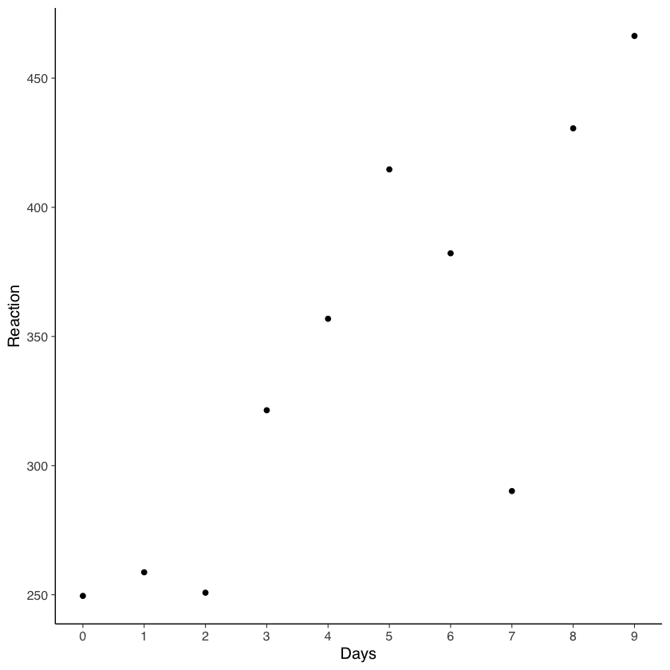
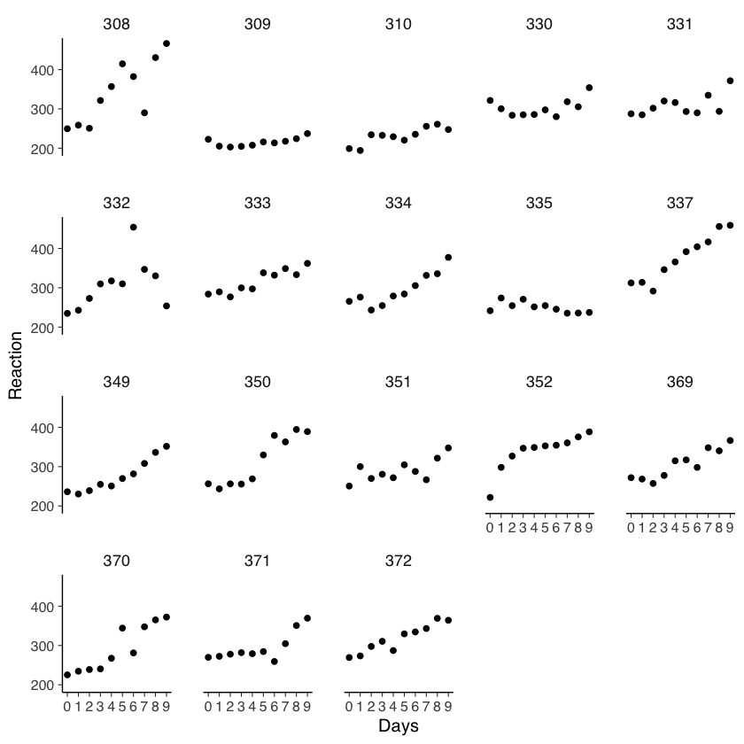
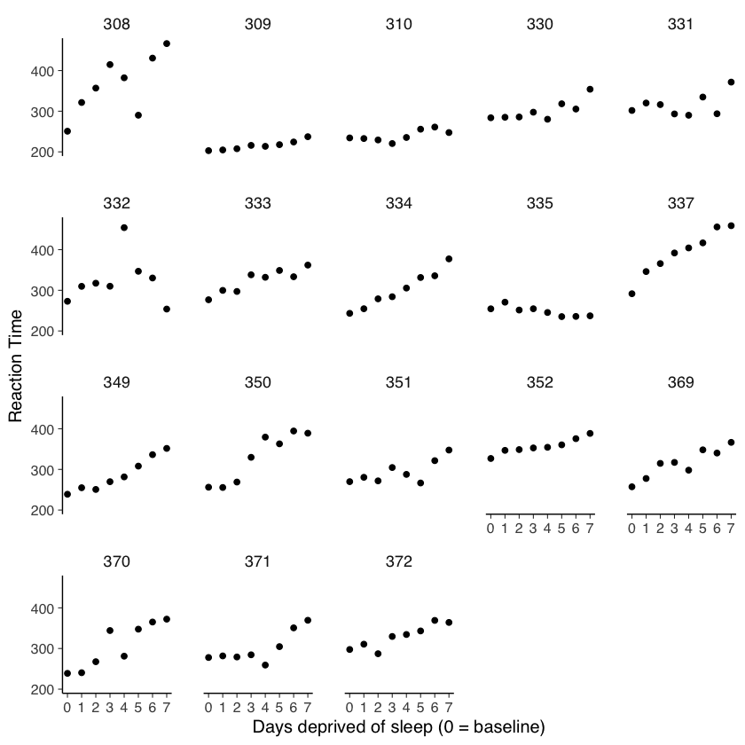
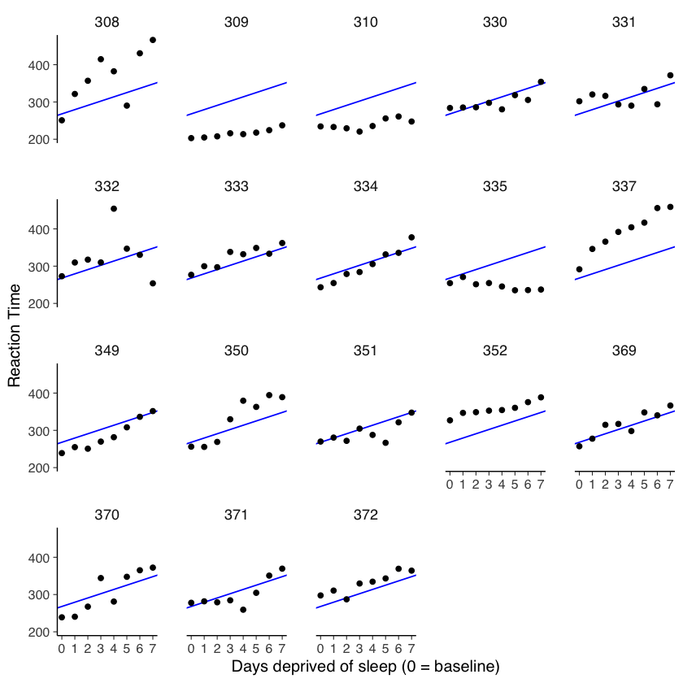
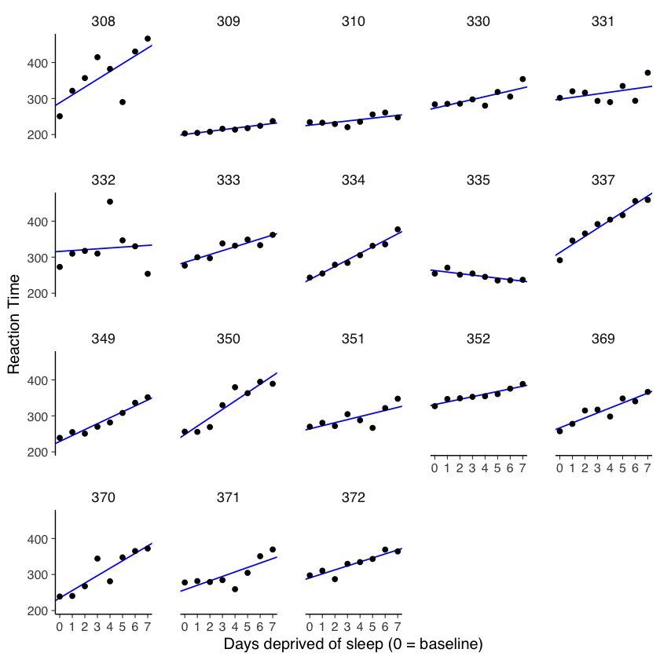
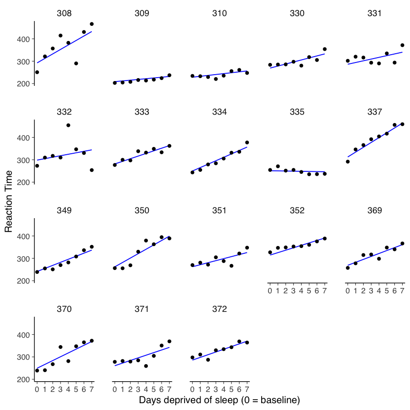
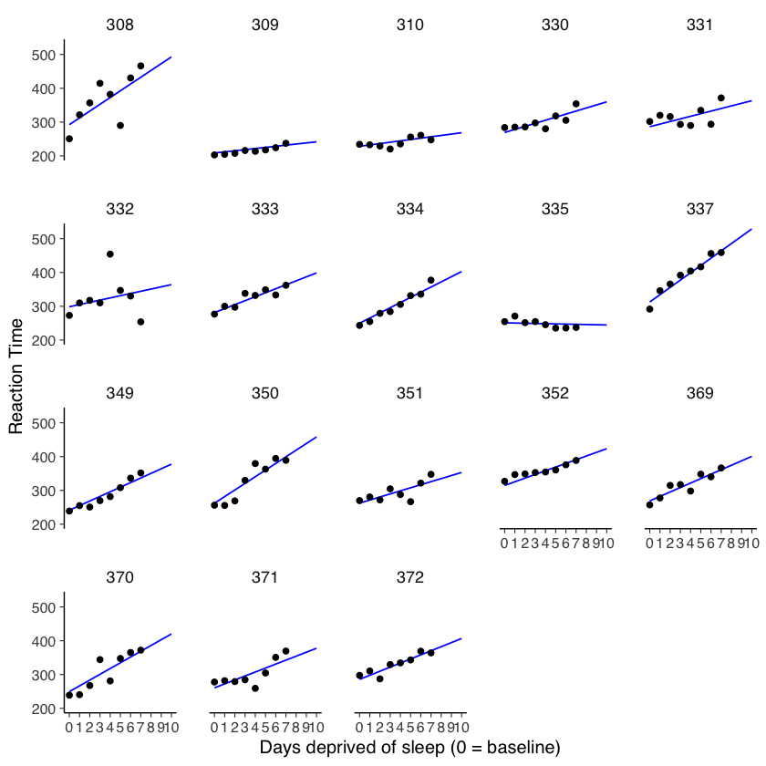

<!DOCTYPE html>


<html lang="en" data-content_root="" >

  <head>
    <meta charset="utf-8" />
    <meta name="viewport" content="width=device-width, initial-scale=1.0" /><meta name="generator" content="Docutils 0.18.1: http://docutils.sourceforge.net/" />

    <title>12. Modelli multilivello &#8212; psy_test</title>
  
  
  
  <script data-cfasync="false">
    document.documentElement.dataset.mode = localStorage.getItem("mode") || "";
    document.documentElement.dataset.theme = localStorage.getItem("theme") || "light";
  </script>
  
  <!-- Loaded before other Sphinx assets -->
  <link href="_static/styles/theme.css?digest=5b4479735964841361fd" rel="stylesheet" />
<link href="_static/styles/bootstrap.css?digest=5b4479735964841361fd" rel="stylesheet" />
<link href="_static/styles/pydata-sphinx-theme.css?digest=5b4479735964841361fd" rel="stylesheet" />

  
  <link href="_static/vendor/fontawesome/6.1.2/css/all.min.css?digest=5b4479735964841361fd" rel="stylesheet" />
  <link rel="preload" as="font" type="font/woff2" crossorigin href="_static/vendor/fontawesome/6.1.2/webfonts/fa-solid-900.woff2" />
<link rel="preload" as="font" type="font/woff2" crossorigin href="_static/vendor/fontawesome/6.1.2/webfonts/fa-brands-400.woff2" />
<link rel="preload" as="font" type="font/woff2" crossorigin href="_static/vendor/fontawesome/6.1.2/webfonts/fa-regular-400.woff2" />

    <link rel="stylesheet" type="text/css" href="_static/pygments.css" />
    <link rel="stylesheet" href="_static/styles/sphinx-book-theme.css?digest=14f4ca6b54d191a8c7657f6c759bf11a5fb86285" type="text/css" />
    <link rel="stylesheet" type="text/css" href="_static/togglebutton.css" />
    <link rel="stylesheet" type="text/css" href="_static/copybutton.css" />
    <link rel="stylesheet" type="text/css" href="_static/mystnb.4510f1fc1dee50b3e5859aac5469c37c29e427902b24a333a5f9fcb2f0b3ac41.css" />
    <link rel="stylesheet" type="text/css" href="_static/sphinx-thebe.css" />
    <link rel="stylesheet" type="text/css" href="_static/proof.css" />
    <link rel="stylesheet" type="text/css" href="_static/a11y.css" />
    <link rel="stylesheet" type="text/css" href="_static/custom.css" />
    <link rel="stylesheet" type="text/css" href="_static/design-style.4045f2051d55cab465a707391d5b2007.min.css" />
  
  <!-- Pre-loaded scripts that we'll load fully later -->
  <link rel="preload" as="script" href="_static/scripts/bootstrap.js?digest=5b4479735964841361fd" />
<link rel="preload" as="script" href="_static/scripts/pydata-sphinx-theme.js?digest=5b4479735964841361fd" />
  <script src="_static/vendor/fontawesome/6.1.2/js/all.min.js?digest=5b4479735964841361fd"></script>

    <script data-url_root="./" id="documentation_options" src="_static/documentation_options.js"></script>
    <script src="_static/jquery.js"></script>
    <script src="_static/underscore.js"></script>
    <script src="_static/_sphinx_javascript_frameworks_compat.js"></script>
    <script src="_static/doctools.js"></script>
    <script src="_static/clipboard.min.js"></script>
    <script src="_static/copybutton.js"></script>
    <script src="_static/scripts/sphinx-book-theme.js?digest=5a5c038af52cf7bc1a1ec88eea08e6366ee68824"></script>
    <script>let toggleHintShow = 'Click to show';</script>
    <script>let toggleHintHide = 'Click to hide';</script>
    <script>let toggleOpenOnPrint = 'true';</script>
    <script src="_static/togglebutton.js"></script>
    <script src="_static/custom.js"></script>
    <script>var togglebuttonSelector = '.toggle, .admonition.dropdown';</script>
    <script src="_static/design-tabs.js"></script>
    <script>const THEBE_JS_URL = "https://unpkg.com/thebe@0.8.2/lib/index.js"
const thebe_selector = ".thebe,.cell"
const thebe_selector_input = "pre"
const thebe_selector_output = ".output, .cell_output"
</script>
    <script async="async" src="_static/sphinx-thebe.js"></script>
    <script>window.MathJax = {"options": {"processHtmlClass": "tex2jax_process|mathjax_process|math|output_area"}}</script>
    <script defer="defer" src="https://cdn.jsdelivr.net/npm/mathjax@3/es5/tex-mml-chtml.js"></script>
    <script>DOCUMENTATION_OPTIONS.pagename = '030_multilevel_1';</script>
    <link rel="shortcut icon" href="_static/increasing.png"/>
    <link rel="index" title="Index" href="genindex.html" />
    <link rel="search" title="Search" href="search.html" />
    <link rel="next" title="13. L’affidabilità tra giudici" href="031_interrater_reliability.html" />
    <link rel="prev" title="11. ✏️ Esercizi" href="E_ctt_1.html" />
  <meta name="viewport" content="width=device-width, initial-scale=1"/>
  <meta name="docsearch:language" content="en"/>
  </head>
  
  
  <body data-bs-spy="scroll" data-bs-target=".bd-toc-nav" data-offset="180" data-bs-root-margin="0px 0px -60%" data-default-mode="">

  
  
  <a class="skip-link" href="#main-content">Skip to main content</a>
  
  <div id="pst-scroll-pixel-helper"></div>

  
  <button type="button" class="btn rounded-pill" id="pst-back-to-top">
    <i class="fa-solid fa-arrow-up"></i>
    Back to top
  </button>

  
  <input type="checkbox"
          class="sidebar-toggle"
          name="__primary"
          id="__primary"/>
  <label class="overlay overlay-primary" for="__primary"></label>
  
  <input type="checkbox"
          class="sidebar-toggle"
          name="__secondary"
          id="__secondary"/>
  <label class="overlay overlay-secondary" for="__secondary"></label>
  
  <div class="search-button__wrapper">
    <div class="search-button__overlay"></div>
    <div class="search-button__search-container">
<form class="bd-search d-flex align-items-center"
      action="search.html"
      method="get">
  <i class="fa-solid fa-magnifying-glass"></i>
  <input type="search"
         class="form-control"
         name="q"
         id="search-input"
         placeholder="Search this book..."
         aria-label="Search this book..."
         autocomplete="off"
         autocorrect="off"
         autocapitalize="off"
         spellcheck="false"/>
  <span class="search-button__kbd-shortcut"><kbd class="kbd-shortcut__modifier">Ctrl</kbd>+<kbd>K</kbd></span>
</form></div>
  </div>
  
    <nav class="bd-header navbar navbar-expand-lg bd-navbar">
    </nav>
  
  <div class="bd-container">
    <div class="bd-container__inner bd-page-width">
      
      <div class="bd-sidebar-primary bd-sidebar">
        

  
  <div class="sidebar-header-items sidebar-primary__section">
    
    
    
    
  </div>
  
    <div class="sidebar-primary-items__start sidebar-primary__section">
        <div class="sidebar-primary-item">

  

<a class="navbar-brand logo" href="intro.html">
  
  
  
  
  
    
    
      
    
    
    
    <script>document.write(``);</script>
  
  
</a></div>
        <div class="sidebar-primary-item"><nav class="bd-links" id="bd-docs-nav" aria-label="Main">
    <div class="bd-toc-item navbar-nav active">
        
        <ul class="nav bd-sidenav bd-sidenav__home-link">
            <li class="toctree-l1">
                <a class="reference internal" href="intro.html">
                    Benvenuti
                </a>
            </li>
        </ul>
        <p aria-level="2" class="caption" role="heading"><span class="caption-text">Test psicometrici</span></p>
<ul class="nav bd-sidenav">
<li class="toctree-l1"><a class="reference internal" href="002_measurement.html">1. Misurazione: affidabilità, validazione di costrutto e costruzione di Scale</a></li>
<li class="toctree-l1"><a class="reference internal" href="005_tipologie_test.html">2. Introduzione alla Psicometria: Approcci, Metodologie e Applicazioni</a></li>
<li class="toctree-l1"><a class="reference internal" href="007_norms.html">3. Valutazioni normative e criteriali</a></li>
<li class="toctree-l1"><a class="reference internal" href="010_development.html">4. Sviluppo dello strumento</a></li>
</ul>
<p aria-level="2" class="caption" role="heading"><span class="caption-text">Teoria classica dei test</span></p>
<ul class="nav bd-sidenav">
<li class="toctree-l1"><a class="reference internal" href="020_ctt_1.html">5. Fondamenti teorici</a></li>
<li class="toctree-l1"><a class="reference internal" href="021_ctt_2.html">6. L’affidabilità del test</a></li>
<li class="toctree-l1"><a class="reference internal" href="022_ctt_3.html">7. Metodi di stima dell’affidabilità</a></li>
<li class="toctree-l1"><a class="reference internal" href="025_err_std_mis.html">8. L’errore standard della misurazione</a></li>
<li class="toctree-l1"><a class="reference internal" href="026_err_std_stima.html">9. La stima del punteggio vero</a></li>
<li class="toctree-l1"><a class="reference internal" href="028_applications_ctt.html">10. Applicazioni della CTT</a></li>
<li class="toctree-l1"><a class="reference internal" href="E_ctt_1.html">11. ✏️ Esercizi</a></li>
</ul>
<p aria-level="2" class="caption" role="heading"><span class="caption-text">Affidabilità tra giudici</span></p>
<ul class="current nav bd-sidenav">
<li class="toctree-l1 current active"><a class="current reference internal" href="#">12. Modelli multilivello</a></li>
<li class="toctree-l1"><a class="reference internal" href="031_interrater_reliability.html">13. L’affidabilità tra giudici</a></li>
</ul>
<p aria-level="2" class="caption" role="heading"><span class="caption-text">Teoria della Generalizzabilità</span></p>
<ul class="nav bd-sidenav">
<li class="toctree-l1"><a class="reference internal" href="041_gtheory.html">14. Teoria della generalizzabilità</a></li>
</ul>
<p aria-level="2" class="caption" role="heading"><span class="caption-text">Network Psychometrics</span></p>
<ul class="nav bd-sidenav">
<li class="toctree-l1"><a class="reference internal" href="045_networks.html">15. Network models</a></li>
</ul>
<p aria-level="2" class="caption" role="heading"><span class="caption-text">Validità</span></p>
<ul class="nav bd-sidenav">
<li class="toctree-l1"><a class="reference internal" href="051_validity.html">16. La validità del test</a></li>
<li class="toctree-l1"><a class="reference internal" href="055_relations_to_other_vars.html">17. Relazioni test-criterio</a></li>
</ul>
<p aria-level="2" class="caption" role="heading"><span class="caption-text">Analisi dei percorsi</span></p>
<ul class="nav bd-sidenav">
<li class="toctree-l1"><a class="reference internal" href="061_path_analysis.html">18. Path analysis</a></li>
</ul>
<p aria-level="2" class="caption" role="heading"><span class="caption-text">Analisi fattoriale</span></p>
<ul class="nav bd-sidenav">
<li class="toctree-l1"><a class="reference internal" href="150_intro_fa.html">19. Introduzione all’analisi fattoriale</a></li>
<li class="toctree-l1"><a class="reference internal" href="155_analisi_fattoriale_1.html">20. Il modello unifattoriale</a></li>
<li class="toctree-l1"><a class="reference internal" href="156_analisi_fattoriale_2.html">21. Il modello statistico dell’analisi fattoriale</a></li>
<li class="toctree-l1"><a class="reference internal" href="157_analisi_fattoriale_3.html">22. Il modello multifattoriale</a></li>
<li class="toctree-l1"><a class="reference internal" href="158_factor_scores.html">23. I punteggi fattoriali</a></li>
<li class="toctree-l1"><a class="reference internal" href="162_constraints_on_parms.html">24. Attendibilità e modello fattoriale</a></li>
<li class="toctree-l1"><a class="reference internal" href="163_total_score.html">25. Punteggio totale e modello fattoriale</a></li>
<li class="toctree-l1"><a class="reference internal" href="170_cfa_mod_comp.html">26. CFA: confronto tra modelli</a></li>
<li class="toctree-l1"><a class="reference internal" href="175_bifactor.html">27. Modello bifattoriale</a></li>
</ul>
<p aria-level="2" class="caption" role="heading"><span class="caption-text">Costruzione di strumenti psicometrici</span></p>
<ul class="nav bd-sidenav">
<li class="toctree-l1"><a class="reference internal" href="201_valutare_le_matrici.html">28. Valutazione della matrice di correlazione</a></li>
<li class="toctree-l1"><a class="reference internal" href="202_estrazione.html">29. L’estrazione dei fattori</a></li>
<li class="toctree-l1"><a class="reference internal" href="203_numero_fattori.html">30. Il numero dei fattori</a></li>
<li class="toctree-l1"><a class="reference internal" href="205_rotazione.html">31. La rotazione fattoriale</a></li>
<li class="toctree-l1"><a class="reference internal" href="206_valutare_sol_fattoriale.html">32. Valutare e rifinire la soluzione fattoriale</a></li>
<li class="toctree-l1"><a class="reference internal" href="210_group_invariance.html">33. Invarianza di misura</a></li>
<li class="toctree-l1"><a class="reference internal" href="215_gof.html">34. Indici di bontà dell’adattamento</a></li>
<li class="toctree-l1"><a class="reference internal" href="220_refine_solution.html">35. La revisione del modello</a></li>
<li class="toctree-l1"><a class="reference internal" href="225_mmm.html">36. CFA per matrici multi-tratto multi-metodo</a></li>
<li class="toctree-l1"><a class="reference internal" href="230_cat_data.html">37. Dati non gaussiani e categoriali</a></li>
<li class="toctree-l1"><a class="reference internal" href="235_missing_data.html">38. Dati mancanti</a></li>
</ul>
<p aria-level="2" class="caption" role="heading"><span class="caption-text">Modelli di equazioni strutturali</span></p>
<ul class="nav bd-sidenav">
<li class="toctree-l1"><a class="reference internal" href="351_sem_intro.html">39. Introduzione ai modelli di equazioni struttural</a></li>
<li class="toctree-l1"><a class="reference internal" href="352_visualize_sem.html">40. Visualizzare i modelli di equazioni strutturali</a></li>
</ul>
<p aria-level="2" class="caption" role="heading"><span class="caption-text">Modelli IRT</span></p>
<ul class="nav bd-sidenav">
<li class="toctree-l1"><a class="reference internal" href="401_irt.html">41. Modelli di risposta all’item</a></li>
</ul>
<p aria-level="2" class="caption" role="heading"><span class="caption-text">Tutorial</span></p>
<ul class="nav bd-sidenav">
<li class="toctree-l1"><a class="reference internal" href="500_sviluppo_strumento.html">42. Costruzione di test psicometrici</a></li>
</ul>
<p aria-level="2" class="caption" role="heading"><span class="caption-text">Curve di crescita latente</span></p>
<ul class="nav bd-sidenav">
<li class="toctree-l1"><a class="reference internal" href="701_lgm_intro.html">43. Curve di crescita latente</a></li>
<li class="toctree-l1"><a class="reference internal" href="702_lgm_prelims.html">44. Dati longitudinali</a></li>
<li class="toctree-l1"><a class="reference internal" href="703_lgm_mixed.html">45. LGM e modelli misti</a></li>
<li class="toctree-l1"><a class="reference internal" href="705_growth_1.html">46. Curve di crescita latente</a></li>
<li class="toctree-l1"><a class="reference internal" href="706_growth_cont.html">47. Il tempo su una metrica continua</a></li>
<li class="toctree-l1"><a class="reference internal" href="710_time_inv_cov.html">48. Covariate indipendenti dal tempo</a></li>
<li class="toctree-l1"><a class="reference internal" href="711_growth_groups.html">49. Modelli di crescita latenti a gruppi multipli</a></li>
<li class="toctree-l1"><a class="reference internal" href="715_bivariate_growth_models.html">50. Modelli di crescita latenti bivariati</a></li>
<li class="toctree-l1"><a class="reference internal" href="720_inv_measurement.html">51. Invarianza di misurazione</a></li>
<li class="toctree-l1"><a class="reference internal" href="750_latent_change.html">52. Modello LCS univariato</a></li>
<li class="toctree-l1"><a class="reference internal" href="751_biv_change.html">53. Modello LCS bivariato</a></li>
<li class="toctree-l1"><a class="reference internal" href="755_lgm_meas_inv.html">54. Invarianza fattoriale nei modelli LGM</a></li>
</ul>
<p aria-level="2" class="caption" role="heading"><span class="caption-text">Bibliografia</span></p>
<ul class="nav bd-sidenav">
<li class="toctree-l1"><a class="reference internal" href="z_biblio.html">55. Bibliografia</a></li>
</ul>
<p aria-level="2" class="caption" role="heading"><span class="caption-text">Appendici</span></p>
<ul class="nav bd-sidenav">
<li class="toctree-l1"><a class="reference internal" href="901_intro_r.html">56. Linguaggio di programmazione R</a></li>
<li class="toctree-l1"><a class="reference internal" href="910_regression.html">57. L’analisi di regressione</a></li>
</ul>

    </div>
</nav></div>
    </div>
  
  
  <div class="sidebar-primary-items__end sidebar-primary__section">
  </div>
  
  <div id="rtd-footer-container"></div>


      </div>
      
      <main id="main-content" class="bd-main">
        
        

<div class="sbt-scroll-pixel-helper"></div>

          <div class="bd-content">
            <div class="bd-article-container">
              
              <div class="bd-header-article">
<div class="header-article-items header-article__inner">
  
    <div class="header-article-items__start">
      
        <div class="header-article-item"><label class="sidebar-toggle primary-toggle btn btn-sm" for="__primary" title="Toggle primary sidebar" data-bs-placement="bottom" data-bs-toggle="tooltip">
  <span class="fa-solid fa-bars"></span>
</label></div>
      
    </div>
  
  
    <div class="header-article-items__end">
      
        <div class="header-article-item">

<div class="article-header-buttons">


<div class="dropdown dropdown-source-buttons">
  <button class="btn dropdown-toggle" type="button" data-bs-toggle="dropdown" aria-expanded="false" aria-label="Source repositories">
    <i class="fab fa-github"></i>
  </button>
  <ul class="dropdown-menu">
      
      
      
      <li><a href="https://github.com/ccaudek/psy_test" target="_blank"
   class="btn btn-sm btn-source-repository-button dropdown-item"
   title="Source repository"
   data-bs-placement="left" data-bs-toggle="tooltip"
>
  

<span class="btn__icon-container">
  <i class="fab fa-github"></i>
  </span>
<span class="btn__text-container">Repository</span>
</a>
</li>
      
      
      
      
      <li><a href="https://github.com/ccaudek/psy_test/issues/new?title=Issue%20on%20page%20%2F030_multilevel_1.html&body=Your%20issue%20content%20here." target="_blank"
   class="btn btn-sm btn-source-issues-button dropdown-item"
   title="Open an issue"
   data-bs-placement="left" data-bs-toggle="tooltip"
>
  

<span class="btn__icon-container">
  <i class="fas fa-lightbulb"></i>
  </span>
<span class="btn__text-container">Open issue</span>
</a>
</li>
      
  </ul>
</div>


<div class="dropdown dropdown-download-buttons">
  <button class="btn dropdown-toggle" type="button" data-bs-toggle="dropdown" aria-expanded="false" aria-label="Download this page">
    <i class="fas fa-download"></i>
  </button>
  <ul class="dropdown-menu">
      
      
      
      <li><a href="_sources/030_multilevel_1.ipynb" target="_blank"
   class="btn btn-sm btn-download-source-button dropdown-item"
   title="Download source file"
   data-bs-placement="left" data-bs-toggle="tooltip"
>
  

<span class="btn__icon-container">
  <i class="fas fa-file"></i>
  </span>
<span class="btn__text-container">.ipynb</span>
</a>
</li>
      
      
      
      
      <li>
<button onclick="window.print()"
  class="btn btn-sm btn-download-pdf-button dropdown-item"
  title="Print to PDF"
  data-bs-placement="left" data-bs-toggle="tooltip"
>
  

<span class="btn__icon-container">
  <i class="fas fa-file-pdf"></i>
  </span>
<span class="btn__text-container">.pdf</span>
</button>
</li>
      
  </ul>
</div>


<button onclick="toggleFullScreen()"
  class="btn btn-sm btn-fullscreen-button"
  title="Fullscreen mode"
  data-bs-placement="bottom" data-bs-toggle="tooltip"
>
  

<span class="btn__icon-container">
  <i class="fas fa-expand"></i>
  </span>

</button>


<script>
document.write(`
  <button class="btn btn-sm navbar-btn theme-switch-button" title="light/dark" aria-label="light/dark" data-bs-placement="bottom" data-bs-toggle="tooltip">
    <span class="theme-switch nav-link" data-mode="light"><i class="fa-solid fa-sun fa-lg"></i></span>
    <span class="theme-switch nav-link" data-mode="dark"><i class="fa-solid fa-moon fa-lg"></i></span>
    <span class="theme-switch nav-link" data-mode="auto"><i class="fa-solid fa-circle-half-stroke fa-lg"></i></span>
  </button>
`);
</script>


<script>
document.write(`
  <button class="btn btn-sm navbar-btn search-button search-button__button" title="Search" aria-label="Search" data-bs-placement="bottom" data-bs-toggle="tooltip">
    <i class="fa-solid fa-magnifying-glass fa-lg"></i>
  </button>
`);
</script>
<label class="sidebar-toggle secondary-toggle btn btn-sm" for="__secondary"title="Toggle secondary sidebar" data-bs-placement="bottom" data-bs-toggle="tooltip">
    <span class="fa-solid fa-list"></span>
</label>
</div></div>
      
    </div>
  
</div>
</div>
              
              

<div id="jb-print-docs-body" class="onlyprint">
    <h1>Modelli multilivello</h1>
    <!-- Table of contents -->
    <div id="print-main-content">
        <div id="jb-print-toc">
            
            <div>
                <h2> Contents </h2>
            </div>
            <nav aria-label="Page">
                <ul class="visible nav section-nav flex-column">
<li class="toc-h2 nav-item toc-entry"><a class="reference internal nav-link" href="#complete-pooling">12.1. Complete pooling</a></li>
<li class="toc-h2 nav-item toc-entry"><a class="reference internal nav-link" href="#no-pooling">12.2. No pooling</a></li>
<li class="toc-h2 nav-item toc-entry"><a class="reference internal nav-link" href="#partial-pooling-attraverso-modelli-misti">12.3. <em>Partial pooling</em> attraverso modelli misti</a></li>
<li class="toc-h2 nav-item toc-entry"><a class="reference internal nav-link" href="#la-matrice-di-varianze-covarianze">12.4. La matrice di varianze-covarianze</a></li>
<li class="toc-h2 nav-item toc-entry"><a class="reference internal nav-link" href="#stimare-i-parametri-del-modello">12.5. Stimare i parametri del modello</a></li>
<li class="toc-h2 nav-item toc-entry"><a class="reference internal nav-link" href="#interpretare-l-output-di-lmer-ed-estrarre-le-stime">12.6. Interpretare l’output di <code class="docutils literal notranslate"><span class="pre">lmer()</span></code> ed estrarre le stime</a><ul class="nav section-nav flex-column">
<li class="toc-h3 nav-item toc-entry"><a class="reference internal nav-link" href="#effetti-fissi">12.6.1. Effetti fissi</a></li>
<li class="toc-h3 nav-item toc-entry"><a class="reference internal nav-link" href="#effetti-random">12.6.2. Effetti random</a></li>
</ul>
</li>
</ul>
            </nav>
        </div>
    </div>
</div>

              
                
<div id="searchbox"></div>
                <article class="bd-article" role="main">
                  
  <section class="tex2jax_ignore mathjax_ignore" id="modelli-multilivello">
<span id="multilevel-notebook"></span><h1><span class="section-number">12. </span>Modelli multilivello<a class="headerlink" href="#modelli-multilivello" title="Permalink to this heading">#</a></h1>
<p>In questo capitolo, utilizzeremo dati concreti provenienti da uno studio volto ad analizzare gli effetti della privazione del sonno sulle prestazioni psicomotorie (Belenky et al., 2003). I dati di tale studio sono inclusi nel dataset <code class="docutils literal notranslate"><span class="pre">sleepstudy</span></code> nel pacchetto lme4 di R (Bates et al., 2015). Il presente tutorial riproduce l’esempio discusso da <span id="id1">Barr [<a class="reference internal" href="z_biblio.html#id3" title="Dale J. Barr. Learning statistical models through simulation in r: an interactive textbook. https://psyteachr.github.io/stat-models-v1, 2021.">Bar21</a>]</span>.</p>
<p><a class="github reference external" href="https://github.com/PsyTeachR/stat-models-v1/tree/master">PsyTeachR/stat-models-v1</a></p>
<div class="cell docutils container">
<div class="cell_input docutils container">
<div class="highlight-r notranslate"><div class="highlight"><pre><span></span><span class="nf">source</span><span class="p">(</span><span class="s">&quot;_common.R&quot;</span><span class="p">)</span>

<span class="nf">suppressPackageStartupMessages</span><span class="p">({</span>
<span class="w">    </span><span class="nf">library</span><span class="p">(</span><span class="s">&quot;rio&quot;</span><span class="p">)</span>
<span class="w">    </span><span class="nf">library</span><span class="p">(</span><span class="s">&quot;car&quot;</span><span class="p">)</span>
<span class="w">    </span><span class="nf">library</span><span class="p">(</span><span class="s">&quot;lme4&quot;</span><span class="p">)</span>
<span class="w">    </span><span class="nf">library</span><span class="p">(</span><span class="s">&quot;knitr&quot;</span><span class="p">)</span>
<span class="w">    </span><span class="nf">library</span><span class="p">(</span><span class="s">&quot;markdown&quot;</span><span class="p">)</span>
<span class="w">    </span><span class="nf">library</span><span class="p">(</span><span class="s">&quot;lavaan&quot;</span><span class="p">)</span>
<span class="w">    </span><span class="nf">library</span><span class="p">(</span><span class="s">&quot;semPlot&quot;</span><span class="p">)</span>
<span class="w">    </span><span class="nf">library</span><span class="p">(</span><span class="s">&quot;repr&quot;</span><span class="p">)</span>
<span class="w">    </span><span class="nf">library</span><span class="p">(</span><span class="s">&quot;kableExtra&quot;</span><span class="p">)</span>
<span class="p">})</span>
<span class="nf">set.seed</span><span class="p">(</span><span class="m">42</span><span class="p">)</span>
</pre></div>
</div>
</div>
<div class="cell_output docutils container">
<div class="output traceback highlight-ipythontb notranslate"><div class="highlight"><pre><span></span><span class="n">Error</span> <span class="ow">in</span> <span class="n">library</span><span class="p">(</span><span class="s2">&quot;ggExtra&quot;</span><span class="p">):</span> <span class="n">non</span> <span class="n">c</span><span class="s1">&#39;è alcun pacchetto chiamato ‘ggExtra’</span>
<span class="ne">Traceback</span>:

<span class="mi">1</span><span class="o">.</span> <span class="n">source</span><span class="p">(</span><span class="s2">&quot;_common.R&quot;</span><span class="p">)</span>
<span class="mi">2</span><span class="o">.</span> <span class="n">withVisible</span><span class="p">(</span><span class="nb">eval</span><span class="p">(</span><span class="n">ei</span><span class="p">,</span> <span class="n">envir</span><span class="p">))</span>
<span class="mi">3</span><span class="o">.</span> <span class="nb">eval</span><span class="p">(</span><span class="n">ei</span><span class="p">,</span> <span class="n">envir</span><span class="p">)</span>
<span class="mi">4</span><span class="o">.</span> <span class="nb">eval</span><span class="p">(</span><span class="n">ei</span><span class="p">,</span> <span class="n">envir</span><span class="p">)</span>
<span class="mi">5</span><span class="o">.</span> <span class="n">suppressPackageStartupMessages</span><span class="p">({</span>
 <span class="o">.</span>     <span class="n">library</span><span class="p">(</span><span class="s2">&quot;here&quot;</span><span class="p">)</span>
 <span class="o">.</span>     <span class="n">library</span><span class="p">(</span><span class="s2">&quot;tidyverse&quot;</span><span class="p">)</span>
 <span class="o">.</span>     <span class="n">library</span><span class="p">(</span><span class="s2">&quot;scales&quot;</span><span class="p">)</span>
 <span class="o">.</span>     <span class="n">library</span><span class="p">(</span><span class="s2">&quot;patchwork&quot;</span><span class="p">)</span>
 <span class="o">.</span>     <span class="n">library</span><span class="p">(</span><span class="s2">&quot;bayesplot&quot;</span><span class="p">)</span>
 <span class="o">.</span>     <span class="n">library</span><span class="p">(</span><span class="s2">&quot;ggExtra&quot;</span><span class="p">)</span>
 <span class="o">.</span>     <span class="n">library</span><span class="p">(</span><span class="s2">&quot;ggpubr&quot;</span><span class="p">)</span>
 <span class="o">.</span>     <span class="n">library</span><span class="p">(</span><span class="s2">&quot;viridis&quot;</span><span class="p">)</span>
 <span class="o">.</span>     <span class="n">library</span><span class="p">(</span><span class="s2">&quot;ggokabeito&quot;</span><span class="p">)</span>
 <span class="o">.</span> <span class="p">})</span>
<span class="mi">6</span><span class="o">.</span> <span class="n">withCallingHandlers</span><span class="p">(</span><span class="n">expr</span><span class="p">,</span> <span class="n">packageStartupMessage</span> <span class="o">=</span> <span class="n">function</span><span class="p">(</span><span class="n">c</span><span class="p">)</span> <span class="n">tryInvokeRestart</span><span class="p">(</span><span class="s2">&quot;muffleMessage&quot;</span><span class="p">))</span>
<span class="mi">7</span><span class="o">.</span> <span class="n">library</span><span class="p">(</span><span class="s2">&quot;ggExtra&quot;</span><span class="p">)</span>
</pre></div>
</div>
</div>
</div>
<p>Importiamo i dati.</p>
<div class="cell docutils container">
<div class="cell_input docutils container">
<div class="highlight-r notranslate"><div class="highlight"><pre><span></span><span class="nf">data</span><span class="p">(</span><span class="n">sleepstudy</span><span class="p">)</span>
</pre></div>
</div>
</div>
</div>
<div class="cell docutils container">
<div class="cell_input docutils container">
<div class="highlight-r notranslate"><div class="highlight"><pre><span></span><span class="o">?</span><span class="n">sleepstudy</span>
</pre></div>
</div>
</div>
<div class="cell_output docutils container">
<div class="output stream highlight-myst-ansi notranslate"><div class="highlight"><pre><span></span>sleepstudy                package:lme4                 R Documentation

_R_e_a_c_t_i_o_n _t_i_m_e_s _i_n _a _s_l_e_e_p _d_e_p_r_i_v_a_t_i_o_n _s_t_u_d_y

_D_e_s_c_r_i_p_t_i_o_n:

     The average reaction time per day (in milliseconds) for subjects
     in a sleep deprivation study.

     Days 0-1 were adaptation and training (T1/T2), day 2 was baseline
     (B); sleep deprivation started after day 2.

_F_o_r_m_a_t:

     A data frame with 180 observations on the following 3 variables.

     ‘Reaction’ Average reaction time (ms)

     ‘Days’ Number of days of sleep deprivation

     ‘Subject’ Subject number on which the observation was made.

_D_e_t_a_i_l_s:

     These data are from the study described in Belenky et al.  (2003),
     for the most sleep-deprived group (3 hours time-in-bed) and for
     the first 10 days of the study, up to the recovery period.  The
     original study analyzed speed (1/(reaction time)) and treated day
     as a categorical rather than a continuous predictor.

_R_e_f_e_r_e_n_c_e_s:

     Gregory Belenky, Nancy J. Wesensten, David R. Thorne, Maria L.
     Thomas, Helen C. Sing, Daniel P. Redmond, Michael B. Russo and
     Thomas J. Balkin (2003) Patterns of performance degradation and
     restoration during sleep restriction and subsequent recovery: a
     sleep dose-response study. _Journal of Sleep Research_ *12*, 1-12.

_E_x_a_m_p_l_e_s:

     str(sleepstudy)
     require(lattice)
     xyplot(Reaction ~ Days | Subject, sleepstudy, type = c(&quot;g&quot;,&quot;p&quot;,&quot;r&quot;),
            index = function(x,y) coef(lm(y ~ x))[1],
            xlab = &quot;Days of sleep deprivation&quot;,
            ylab = &quot;Average reaction time (ms)&quot;, aspect = &quot;xy&quot;)
     (fm1 &lt;- lmer(Reaction ~ Days + (Days|Subject), sleepstudy, subset=Days&gt;=2))
     ## independent model
     (fm2 &lt;- lmer(Reaction ~ Days + (1|Subject) + (0+Days|Subject), sleepstudy, subset=Days&gt;=2))
     
</pre></div>
</div>
</div>
</div>
<p>Questi dati rispettano la definizione di dati multilivello grazie alle misurazioni ripetute sulla medesima variabile dipendente (tempo di reazione medio) per gli stessi partecipanti nel corso di dieci giorni. Dati di questo tipo, a livelli multipli, risultano estremamente comuni nel campo della psicologia.</p>
<p>Esaminiamo più da vicino i dati dello studio. Il dataset comprende diciotto partecipanti nella condizione di sonno di tre ore. Ogni giorno, nel corso di 10 giorni, i partecipanti hanno eseguito un “test di vigilanza psicomotoria” della durata di dieci minuti, durante il quale dovevano monitorare uno schermo e premere un pulsante il più velocemente possibile ogni volta che compariva uno stimolo. La variabile dipendente è rappresentata dal tempo medio di risposta (RT) del partecipante.</p>
<p>Iniziamo con la rappresentazione grafica dei dati. Consideriamo i dati relativi a un singolo soggetto.</p>
<div class="cell docutils container">
<div class="cell_input docutils container">
<div class="highlight-r notranslate"><div class="highlight"><pre><span></span><span class="n">just_308</span><span class="w"> </span><span class="o">&lt;-</span><span class="w"> </span><span class="n">sleepstudy</span><span class="w"> </span><span class="o">%&gt;%</span>
<span class="w">    </span><span class="nf">filter</span><span class="p">(</span><span class="n">Subject</span><span class="w"> </span><span class="o">==</span><span class="w"> </span><span class="s">&quot;308&quot;</span><span class="p">)</span>
</pre></div>
</div>
</div>
</div>
<div class="cell docutils container">
<div class="cell_input docutils container">
<div class="highlight-r notranslate"><div class="highlight"><pre><span></span><span class="nf">ggplot</span><span class="p">(</span><span class="n">just_308</span><span class="p">,</span><span class="w"> </span><span class="nf">aes</span><span class="p">(</span><span class="n">x</span><span class="w"> </span><span class="o">=</span><span class="w"> </span><span class="n">Days</span><span class="p">,</span><span class="w"> </span><span class="n">y</span><span class="w"> </span><span class="o">=</span><span class="w"> </span><span class="n">Reaction</span><span class="p">))</span><span class="w"> </span><span class="o">+</span>
<span class="w">    </span><span class="nf">geom_point</span><span class="p">()</span><span class="w"> </span><span class="o">+</span>
<span class="w">    </span><span class="nf">scale_x_continuous</span><span class="p">(</span><span class="n">breaks</span><span class="w"> </span><span class="o">=</span><span class="w"> </span><span class="m">0</span><span class="o">:</span><span class="m">9</span><span class="p">)</span><span class="w"> </span>
</pre></div>
</div>
</div>
<div class="cell_output docutils container">

</div>
</div>
<p>Esaminiamo i dati di tutti i 18 soggetti.</p>
<div class="cell docutils container">
<div class="cell_input docutils container">
<div class="highlight-r notranslate"><div class="highlight"><pre><span></span><span class="nf">ggplot</span><span class="p">(</span><span class="n">sleepstudy</span><span class="p">,</span><span class="w"> </span><span class="nf">aes</span><span class="p">(</span><span class="n">x</span><span class="w"> </span><span class="o">=</span><span class="w"> </span><span class="n">Days</span><span class="p">,</span><span class="w"> </span><span class="n">y</span><span class="w"> </span><span class="o">=</span><span class="w"> </span><span class="n">Reaction</span><span class="p">))</span><span class="w"> </span><span class="o">+</span>
<span class="w">    </span><span class="nf">geom_point</span><span class="p">()</span><span class="w"> </span><span class="o">+</span>
<span class="w">    </span><span class="nf">scale_x_continuous</span><span class="p">(</span><span class="n">breaks</span><span class="w"> </span><span class="o">=</span><span class="w"> </span><span class="m">0</span><span class="o">:</span><span class="m">9</span><span class="p">)</span><span class="w"> </span><span class="o">+</span>
<span class="w">    </span><span class="nf">facet_wrap</span><span class="p">(</span><span class="o">~</span><span class="n">Subject</span><span class="p">)</span>
</pre></div>
</div>
</div>
<div class="cell_output docutils container">

</div>
</div>
<p>Per modellare correttamente i dati, è innanzitutto necessario capire qual è il disegno sperimentale. Ecco come Belenky et al. (2003) descrivono il loro studio (p. 2):</p>
<blockquote>
<div><p>I primi 3 giorni (T1, T2 e B) sono stati dedicati all’adattamento e all’addestramento (T1 e T2) e alla baseline (B). Ai soggetti è stato richiesto di restare a letto dalle 23:00 alle 07:00 (8 ore di tempo a letto richieste, TIB). Nel terzo giorno (B), sono state effettuate le misurazioni di baseline. A partire dal quarto giorno e per un totale di 7 giorni (E1-E7), i soggetti si sono trovati in una delle quattro condizioni di sonno [9 ore di TIB richieste (22:00-07:00), 7 ore di TIB richieste (24:00-07:00), 5 ore di TIB richieste (02:00-07:00) o 3 ore di TIB richieste (04:00-07:00)], corrispondenti a una condizione di aumento del sonno e a tre condizioni di restrizione del sonno.</p>
</div></blockquote>
<p>Ci sono state sette notti di restrizione del sonno, con la prima notte di restrizione che è avvenuta dopo il terzo giorno. I primi due giorni, codificati come 0 e 1, sono stati dedicati all’adattamento e all’addestramento. Il giorno codificato come 2, in cui è stata effettuata la misurazione di base, rappresenta il punto di partenza dell’analisi. Se includiamo i giorni 0 e 1 nell’analisi, ciò potrebbe influenzare i risultati, poiché qualsiasi cambiamento nelle prestazioni durante i primi due giorni è legato all’addestramento, non alla restrizione del sonno.</p>
<p>Dall’insieme di dati, eliminiamo le osservazioni in cui la variabile “Days” è codificata come 0 o 1. Successivamente, creiamo una nuova variabile chiamata “days_deprived” basata sulla variabile “Days”, in modo che la sequenza abbia inizio dal giorno 2, dove il giorno 2 viene ricodificato come giorno 0, il giorno 3 come giorno 1, il giorno 4 come giorno 2, e così via. Questa nuova variabile rappresenta ora il numero di giorni di privazione del sonno. Salviamo il nuovo DataFrame con il nome “sleep2”.</p>
<div class="cell docutils container">
<div class="cell_input docutils container">
<div class="highlight-r notranslate"><div class="highlight"><pre><span></span><span class="n">sleep2</span><span class="w"> </span><span class="o">&lt;-</span><span class="w"> </span><span class="n">sleepstudy</span><span class="w"> </span><span class="o">%&gt;%</span>
<span class="w">    </span><span class="nf">filter</span><span class="p">(</span><span class="n">Days</span><span class="w"> </span><span class="o">&gt;=</span><span class="w"> </span><span class="m">2L</span><span class="p">)</span><span class="w"> </span><span class="o">%&gt;%</span>
<span class="w">    </span><span class="nf">mutate</span><span class="p">(</span><span class="n">days_deprived</span><span class="w"> </span><span class="o">=</span><span class="w"> </span><span class="n">Days</span><span class="w"> </span><span class="o">-</span><span class="w"> </span><span class="m">2L</span><span class="p">)</span>
</pre></div>
</div>
</div>
</div>
<div class="cell docutils container">
<div class="cell_input docutils container">
<div class="highlight-r notranslate"><div class="highlight"><pre><span></span><span class="n">sleep2</span><span class="w"> </span><span class="o">%&gt;%</span>
<span class="w">    </span><span class="nf">count</span><span class="p">(</span><span class="n">days_deprived</span><span class="p">,</span><span class="w"> </span><span class="n">Days</span><span class="p">)</span>
</pre></div>
</div>
</div>
<div class="cell_output docutils container">
<div class="output text_html"><table class="dataframe">
<caption>A data.frame: 8 × 3</caption>
<thead>
	<tr><th scope=col>days_deprived</th><th scope=col>Days</th><th scope=col>n</th></tr>
	<tr><th scope=col>&lt;dbl&gt;</th><th scope=col>&lt;dbl&gt;</th><th scope=col>&lt;int&gt;</th></tr>
</thead>
<tbody>
	<tr><td>0</td><td>2</td><td>18</td></tr>
	<tr><td>1</td><td>3</td><td>18</td></tr>
	<tr><td>2</td><td>4</td><td>18</td></tr>
	<tr><td>3</td><td>5</td><td>18</td></tr>
	<tr><td>4</td><td>6</td><td>18</td></tr>
	<tr><td>5</td><td>7</td><td>18</td></tr>
	<tr><td>6</td><td>8</td><td>18</td></tr>
	<tr><td>7</td><td>9</td><td>18</td></tr>
</tbody>
</table>
</div></div>
</div>
<div class="cell docutils container">
<div class="cell_input docutils container">
<div class="highlight-r notranslate"><div class="highlight"><pre><span></span><span class="nf">ggplot</span><span class="p">(</span><span class="n">sleep2</span><span class="p">,</span><span class="w"> </span><span class="nf">aes</span><span class="p">(</span><span class="n">x</span><span class="w"> </span><span class="o">=</span><span class="w"> </span><span class="n">days_deprived</span><span class="p">,</span><span class="w"> </span><span class="n">y</span><span class="w"> </span><span class="o">=</span><span class="w"> </span><span class="n">Reaction</span><span class="p">))</span><span class="w"> </span><span class="o">+</span>
<span class="w">    </span><span class="nf">geom_point</span><span class="p">()</span><span class="w"> </span><span class="o">+</span>
<span class="w">    </span><span class="nf">scale_x_continuous</span><span class="p">(</span><span class="n">breaks</span><span class="w"> </span><span class="o">=</span><span class="w"> </span><span class="m">0</span><span class="o">:</span><span class="m">7</span><span class="p">)</span><span class="w"> </span><span class="o">+</span>
<span class="w">    </span><span class="nf">facet_wrap</span><span class="p">(</span><span class="o">~</span><span class="n">Subject</span><span class="p">)</span><span class="w"> </span><span class="o">+</span>
<span class="w">    </span><span class="nf">labs</span><span class="p">(</span><span class="n">y</span><span class="w"> </span><span class="o">=</span><span class="w"> </span><span class="s">&quot;Reaction Time&quot;</span><span class="p">,</span><span class="w"> </span><span class="n">x</span><span class="w"> </span><span class="o">=</span><span class="w"> </span><span class="s">&quot;Days deprived of sleep (0 = baseline)&quot;</span><span class="p">)</span>
</pre></div>
</div>
</div>
<div class="cell_output docutils container">

</div>
</div>
<p>Fatta eccezione per un singolo caso (soggetto 335), sembra che il tempo di reazione aumenti con l’aggiunta di ciascun giorno di privazione del sonno. Sarebbe sensato descrivere i dati di ciascun partecipante con una retta. Ricordiamo che l’equazione generale per una retta è della forma <span class="math notranslate nohighlight">\(y = \text{intercetta} + \text{pendenza} \times x\)</span>. Nella regressione, solitamente esprimiamo una relazione lineare con la formula</p>
<div class="math notranslate nohighlight">
\[ Y = \beta_0 + \beta_1 X, \]</div>
<p>dove <span class="math notranslate nohighlight">\(\beta_0\)</span> rappresenta l’intercetta <span class="math notranslate nohighlight">\(y\)</span> e <span class="math notranslate nohighlight">\(\beta_1\)</span> è la pendenza, parametri i cui valori stimiamo dai dati.</p>
<p>Le rette si distinguono per l’intercetta (tempo di reazione medio al giorno zero, prima dell’inizio della privazione del sonno) e per la pendenza (variazione del tempo di reazione con l’aggiunta di ciascun giorno di privazione del sonno). Tuttavia, è necessario adattare la stessa retta a tutti i partecipanti? Oppure sarebbe meglio utilizzare una retta completamente diversa per ciascun soggetto? Oppure ancora, la soluzione migliore è un compromesso tra le due opzioni precedenti?</p>
<p>Iniziamo considerando tre approcci differenti che potremmo adottare. Seguendo <span id="id2"></span>, distingueremo questi approcci denominandoli “complete pooling”, “no pooling” e “partial pooling”.</p>
<section id="complete-pooling">
<h2><span class="section-number">12.1. </span>Complete pooling<a class="headerlink" href="#complete-pooling" title="Permalink to this heading">#</a></h2>
<p>L’approccio di “complete pooling” è un modello che stima un’unica intercetta e un’unica pendenza per l’intero dataset, ignorando il fatto che diversi soggetti potrebbero variare nelle loro intercette o pendenze. In generale, questa potrebbe sembrare un’approccio valido, ma già sappiamo che non lo è perché abbiamo visualizzato i dati e notato che il modello per ciascun partecipante sembra richiedere valori diversi per le intercette e le pendenze.</p>
<p>Adattare una singola retta è chiamato approccio di “complete pooling” perché si raggruppano insieme i dati di tutti i soggetti per ottenere stime univoche per un’intercetta e una pendenza complessive. Il modello GLM per questo approccio è semplicemente</p>
<div class="math notranslate nohighlight">
\[Y_{sd} = \beta_0 + \beta_1 X_{sd} + e_{sd},\]</div>
<p>dove</p>
<ul class="simple">
<li><p><span class="math notranslate nohighlight">\(Y_{sd}\)</span> rappresenta il tempo di reazione medio per il soggetto <span class="math notranslate nohighlight">\(s\)</span> nel giorno <span class="math notranslate nohighlight">\(d\)</span>,</p></li>
<li><p><span class="math notranslate nohighlight">\(X_{sd}\)</span> è il valore di “days_deprived” associato a quel caso (0-7), e</p></li>
<li><p><span class="math notranslate nohighlight">\(e_{sd}\)</span> è l’errore.</p></li>
</ul>
<p>Per adattare un tale modello in R, si utilizza la funzione <code class="docutils literal notranslate"><span class="pre">lm()</span></code>:</p>
<div class="cell docutils container">
<div class="cell_input docutils container">
<div class="highlight-r notranslate"><div class="highlight"><pre><span></span><span class="n">cp_model</span><span class="w"> </span><span class="o">&lt;-</span><span class="w"> </span><span class="nf">lm</span><span class="p">(</span><span class="n">Reaction</span><span class="w"> </span><span class="o">~</span><span class="w"> </span><span class="n">days_deprived</span><span class="p">,</span><span class="w"> </span><span class="n">sleep2</span><span class="p">)</span>

<span class="nf">summary</span><span class="p">(</span><span class="n">cp_model</span><span class="p">)</span>
</pre></div>
</div>
</div>
<div class="cell_output docutils container">
<div class="output text_plain highlight-myst-ansi notranslate"><div class="highlight"><pre><span></span>Call:
lm(formula = Reaction ~ days_deprived, data = sleep2)

Residuals:
     Min       1Q   Median       3Q      Max 
-112.284  -26.732    2.143   27.734  140.453 

Coefficients:
              Estimate Std. Error t value Pr(&gt;|t|)    
(Intercept)    267.967      7.737  34.633  &lt; 2e-16 ***
days_deprived   11.435      1.850   6.183 6.32e-09 ***
---
Signif. codes:  0 ‘***’ 0.001 ‘**’ 0.01 ‘*’ 0.05 ‘.’ 0.1 ‘ ’ 1

Residual standard error: 50.85 on 142 degrees of freedom
Multiple R-squared:  0.2121,	Adjusted R-squared:  0.2066 
F-statistic: 38.23 on 1 and 142 DF,  p-value: 6.316e-09
</pre></div>
</div>
</div>
</div>
<p>Secondo questo modello, il tempo di risposta medio previsto al Giorno 0 è di circa 268 millisecondi, con un aumento di circa 11 millisecondi al giorno di privazione, in media. Tuttavia, non possiamo avere piena fiducia negli errori standard dei coefficienti di regressione, poiché stiamo assumendo che tutte le osservazioni sono indipendenti. In realtà, sappiamo che si tratta di un’assunzione errata.</p>
<p>Aggiungeremo le previsioni del modello al grafico che abbiamo creato in precedenza. Per farlo, possiamo utilizzare la funzione <code class="docutils literal notranslate"><span class="pre">geom_abline()</span></code>, specificando l’intercetta e la pendenza della linea utilizzando i coefficienti di regressione ottenuti dall’adattamento del modello, tramite la funzione <code class="docutils literal notranslate"><span class="pre">coef(cp_model)</span></code>, la quale restituisce un vettore a due elementi con l’intercetta e la pendenza, rispettivamente.</p>
<div class="cell docutils container">
<div class="cell_input docutils container">
<div class="highlight-r notranslate"><div class="highlight"><pre><span></span><span class="nf">ggplot</span><span class="p">(</span><span class="n">sleep2</span><span class="p">,</span><span class="w"> </span><span class="nf">aes</span><span class="p">(</span><span class="n">x</span><span class="w"> </span><span class="o">=</span><span class="w"> </span><span class="n">days_deprived</span><span class="p">,</span><span class="w"> </span><span class="n">y</span><span class="w"> </span><span class="o">=</span><span class="w"> </span><span class="n">Reaction</span><span class="p">))</span><span class="w"> </span><span class="o">+</span>
<span class="w">    </span><span class="nf">geom_abline</span><span class="p">(</span>
<span class="w">        </span><span class="n">intercept</span><span class="w"> </span><span class="o">=</span><span class="w"> </span><span class="nf">coef</span><span class="p">(</span><span class="n">cp_model</span><span class="p">)[</span><span class="m">1</span><span class="p">],</span>
<span class="w">        </span><span class="n">slope</span><span class="w"> </span><span class="o">=</span><span class="w"> </span><span class="nf">coef</span><span class="p">(</span><span class="n">cp_model</span><span class="p">)[</span><span class="m">2</span><span class="p">],</span>
<span class="w">        </span><span class="n">color</span><span class="w"> </span><span class="o">=</span><span class="w"> </span><span class="s">&quot;blue&quot;</span>
<span class="w">    </span><span class="p">)</span><span class="w"> </span><span class="o">+</span>
<span class="w">    </span><span class="nf">geom_point</span><span class="p">()</span><span class="w"> </span><span class="o">+</span>
<span class="w">    </span><span class="nf">scale_x_continuous</span><span class="p">(</span><span class="n">breaks</span><span class="w"> </span><span class="o">=</span><span class="w"> </span><span class="m">0</span><span class="o">:</span><span class="m">7</span><span class="p">)</span><span class="w"> </span><span class="o">+</span>
<span class="w">    </span><span class="nf">facet_wrap</span><span class="p">(</span><span class="o">~</span><span class="n">Subject</span><span class="p">)</span><span class="w"> </span><span class="o">+</span>
<span class="w">    </span><span class="nf">labs</span><span class="p">(</span><span class="n">y</span><span class="w"> </span><span class="o">=</span><span class="w"> </span><span class="s">&quot;Reaction Time&quot;</span><span class="p">,</span><span class="w"> </span><span class="n">x</span><span class="w"> </span><span class="o">=</span><span class="w"> </span><span class="s">&quot;Days deprived of sleep (0 = baseline)&quot;</span><span class="p">)</span>
</pre></div>
</div>
</div>
<div class="cell_output docutils container">

</div>
</div>
<p>Il modello si adatta male ai dati. Abbiamo bisogno di un approccio diverso.</p>
</section>
<section id="no-pooling">
<h2><span class="section-number">12.2. </span>No pooling<a class="headerlink" href="#no-pooling" title="Permalink to this heading">#</a></h2>
<p>Raggruppare tutte le informazioni per ottenere una sola stima dell’intercetta e una sola stima della pendenza non è appropriato. Un altro approccio è quello che ci porta ad adattare delle rette di regressione separate per ciascun partecipante. Ciò implica che le stime per ciascun partecipante saranno completamente indipendenti dalle stime degli altri partecipanti. In altre parole, possiamo stimare separatamente 18 coppie di intercetta/pendenza.</p>
<p>Questo modello potrebbe essere implementato in due modi: (1) eseguendo delle regressioni separate per ciascun partecipante oppure (2) eseguendo un modello di regressione che includa gli effetti principali e l’interazione tra le variabili <code class="docutils literal notranslate"><span class="pre">Subject</span></code> e <code class="docutils literal notranslate"><span class="pre">Day</span></code>. Opteremo per quest’ultima opzione, in modo da includere tutto in un unico modello. Per procedere in questo modo, aggiungeremo le variabili dummy per il fattore <code class="docutils literal notranslate"><span class="pre">Subject</span></code>. Dato che ci sono 18 livelli per questo fattore, saranno necessarie 17 variabili dummy. Fortunatamente, non è necessario crearle manualmente: R lo farà per noi se definiamo <code class="docutils literal notranslate"><span class="pre">Subject</span></code> come un fattore. Includeremo quindi <code class="docutils literal notranslate"><span class="pre">Subject</span></code>, definito come un fattore, come predittore nel modello, aggiungendo l’interazione tra questo predittore categorico e <code class="docutils literal notranslate"><span class="pre">days_deprived</span></code> per consentire variazioni nelle intercette e nelle pendenze tra i soggetti.</p>
<p>Iniziamo assicurandoci che <code class="docutils literal notranslate"><span class="pre">Subject</span></code> sia definito come un fattore. Esistono vari modi per verificare se una variabile è un fattore, e uno di questi consiste nell’utilizzare la funzione <code class="docutils literal notranslate"><span class="pre">summary()</span></code>.</p>
<div class="cell docutils container">
<div class="cell_input docutils container">
<div class="highlight-r notranslate"><div class="highlight"><pre><span></span><span class="n">sleep2</span><span class="w"> </span><span class="o">%&gt;%</span><span class="w"> </span><span class="nf">summary</span><span class="p">()</span>
</pre></div>
</div>
</div>
<div class="cell_output docutils container">
<div class="output text_plain highlight-myst-ansi notranslate"><div class="highlight"><pre><span></span>    Reaction          Days         Subject   days_deprived 
 Min.   :203.0   Min.   :2.00   308    : 8   Min.   :0.00  
 1st Qu.:265.2   1st Qu.:3.75   309    : 8   1st Qu.:1.75  
 Median :303.2   Median :5.50   310    : 8   Median :3.50  
 Mean   :308.0   Mean   :5.50   330    : 8   Mean   :3.50  
 3rd Qu.:347.7   3rd Qu.:7.25   331    : 8   3rd Qu.:5.25  
 Max.   :466.4   Max.   :9.00   332    : 8   Max.   :7.00  
                                (Other):96                 
</pre></div>
</div>
</div>
</div>
<div class="cell docutils container">
<div class="cell_input docutils container">
<div class="highlight-r notranslate"><div class="highlight"><pre><span></span><span class="n">sleep2</span><span class="w"> </span><span class="o">%&gt;%</span>
<span class="w">    </span><span class="nf">pull</span><span class="p">(</span><span class="n">Subject</span><span class="p">)</span><span class="w"> </span><span class="o">%&gt;%</span>
<span class="w">    </span><span class="nf">is.factor</span><span class="p">()</span>
</pre></div>
</div>
</div>
<div class="cell_output docutils container">
<div class="output text_html">TRUE</div></div>
</div>
<p>Adattiamo il modello di regressione ai dati. Si noti che la sintassi seguente può essere semplificata utilizzando <code class="docutils literal notranslate"><span class="pre">Reaction</span> <span class="pre">~</span> <span class="pre">days_deprived</span> <span class="pre">*</span> <span class="pre">Subject</span></code>.</p>
<div class="cell docutils container">
<div class="cell_input docutils container">
<div class="highlight-r notranslate"><div class="highlight"><pre><span></span><span class="n">np_model</span><span class="w"> </span><span class="o">&lt;-</span><span class="w"> </span><span class="nf">lm</span><span class="p">(</span><span class="n">Reaction</span><span class="w"> </span><span class="o">~</span><span class="w"> </span><span class="n">days_deprived</span><span class="w"> </span><span class="o">+</span><span class="w"> </span><span class="n">Subject</span><span class="w"> </span><span class="o">+</span><span class="w"> </span><span class="n">days_deprived</span><span class="o">:</span><span class="n">Subject</span><span class="p">,</span>
<span class="w">    </span><span class="n">data</span><span class="w"> </span><span class="o">=</span><span class="w"> </span><span class="n">sleep2</span>
<span class="p">)</span>

<span class="nf">summary</span><span class="p">(</span><span class="n">np_model</span><span class="p">)</span>
</pre></div>
</div>
</div>
<div class="cell_output docutils container">
<div class="output text_plain highlight-myst-ansi notranslate"><div class="highlight"><pre><span></span>Call:
lm(formula = Reaction ~ days_deprived + Subject + days_deprived:Subject, 
    data = sleep2)

Residuals:
     Min       1Q   Median       3Q      Max 
-106.521   -8.541    1.143    8.889  128.545 

Coefficients:
                         Estimate Std. Error t value Pr(&gt;|t|)    
(Intercept)              288.2175    16.4772  17.492  &lt; 2e-16 ***
days_deprived             21.6905     3.9388   5.507 2.49e-07 ***
Subject309               -87.9262    23.3023  -3.773 0.000264 ***
Subject310               -62.2856    23.3023  -2.673 0.008685 ** 
Subject330               -14.9533    23.3023  -0.642 0.522422    
Subject331                 9.9658    23.3023   0.428 0.669740    
Subject332                27.8157    23.3023   1.194 0.235215    
Subject333                -2.7581    23.3023  -0.118 0.906000    
Subject334               -50.2051    23.3023  -2.155 0.033422 *  
Subject335               -25.3429    23.3023  -1.088 0.279207    
Subject337                24.6143    23.3023   1.056 0.293187    
Subject349               -59.2183    23.3023  -2.541 0.012464 *  
Subject350               -40.2023    23.3023  -1.725 0.087343 .  
Subject351               -24.2467    23.3023  -1.041 0.300419    
Subject352                43.0655    23.3023   1.848 0.067321 .  
Subject369               -21.5040    23.3023  -0.923 0.358154    
Subject370               -53.3072    23.3023  -2.288 0.024107 *  
Subject371               -30.4896    23.3023  -1.308 0.193504    
Subject372                 2.4772    23.3023   0.106 0.915535    
days_deprived:Subject309 -17.3334     5.5703  -3.112 0.002380 ** 
days_deprived:Subject310 -17.7915     5.5703  -3.194 0.001839 ** 
days_deprived:Subject330 -13.6849     5.5703  -2.457 0.015613 *  
days_deprived:Subject331 -16.8231     5.5703  -3.020 0.003154 ** 
days_deprived:Subject332 -19.2947     5.5703  -3.464 0.000765 ***
days_deprived:Subject333 -10.8151     5.5703  -1.942 0.054796 .  
days_deprived:Subject334  -3.5745     5.5703  -0.642 0.522423    
days_deprived:Subject335 -25.8995     5.5703  -4.650 9.47e-06 ***
days_deprived:Subject337   0.7518     5.5703   0.135 0.892895    
days_deprived:Subject349  -5.2644     5.5703  -0.945 0.346731    
days_deprived:Subject350   1.6007     5.5703   0.287 0.774382    
days_deprived:Subject351 -13.1681     5.5703  -2.364 0.019867 *  
days_deprived:Subject352 -14.4019     5.5703  -2.585 0.011057 *  
days_deprived:Subject369  -7.8948     5.5703  -1.417 0.159273    
days_deprived:Subject370  -1.0495     5.5703  -0.188 0.850912    
days_deprived:Subject371  -9.3443     5.5703  -1.678 0.096334 .  
days_deprived:Subject372 -10.6041     5.5703  -1.904 0.059613 .  
---
Signif. codes:  0 ‘***’ 0.001 ‘**’ 0.01 ‘*’ 0.05 ‘.’ 0.1 ‘ ’ 1

Residual standard error: 25.53 on 108 degrees of freedom
Multiple R-squared:  0.849,	Adjusted R-squared:  0.8001 
F-statistic: 17.35 on 35 and 108 DF,  p-value: &lt; 2.2e-16
</pre></div>
</div>
</div>
</div>
<p>Per chiarire, il soggetto di riferimento è il 308; in R, la modalità predefinita è quella di ordinare i livelli del fattore in ordine alfabetico e di scegliere il primo come soggetto di riferimento. Questo significa che l’intercetta e la pendenza per il soggetto 308 sono rappresentate rispettivamente da <code class="docutils literal notranslate"><span class="pre">(Intercept)</span></code> e <code class="docutils literal notranslate"><span class="pre">days_deprived</span></code>, poiché tutte le altre 17 variabili dummy saranno nulle per il soggetto 308.</p>
<p>Tutti i coefficienti di regressione degli altri soggetti sono rappresentati come scostamenti da questo soggetto di riferimento. Se desideriamo calcolare l’intercetta e la pendenza per un dato soggetto, dobbiamo semplicemente sommare gli scostamenti corrispondenti. Pertanto, abbiamo:</p>
<p>Intercetta per 308: 288.217
Pendenza per 308: 21.69</p>
<p>Intercetta per 335: <code class="docutils literal notranslate"><span class="pre">(Intercept)</span> <span class="pre">+</span> <span class="pre">Subject335</span></code> = 288.217 + -25.343 = 262.874
Pendenza per 335: <code class="docutils literal notranslate"><span class="pre">days_deprived</span> <span class="pre">+</span> <span class="pre">days_deprived:Subject335</span></code> = 21.69 + -25.899 = -4.209</p>
<p>E così via.</p>
<p>Nel modello “no pooling”, non viene stimata un’intercetta e una pendenza complessive per l’intera popolazione; in questo caso, <code class="docutils literal notranslate"><span class="pre">(Intercept)</span></code> e <code class="docutils literal notranslate"><span class="pre">days_deprived</span></code> sono stime dell’intercetta e della pendenza per il soggetto 308, che è stato scelto (arbitrariamente) come soggetto di riferimento. Per ottenere stime per l’intera popolazione, è possibile procedere con una seconda fase dell’analisi statistica in cui calcoliamo le medie delle intercette e delle pendenze individuali.</p>
<div class="cell docutils container">
<div class="cell_input docutils container">
<div class="highlight-r notranslate"><div class="highlight"><pre><span></span><span class="n">all_intercepts</span><span class="w"> </span><span class="o">&lt;-</span><span class="w"> </span><span class="nf">c</span><span class="p">(</span>
<span class="w">    </span><span class="nf">coef</span><span class="p">(</span><span class="n">np_model</span><span class="p">)[</span><span class="s">&quot;(Intercept)&quot;</span><span class="p">],</span>
<span class="w">    </span><span class="nf">coef</span><span class="p">(</span><span class="n">np_model</span><span class="p">)[</span><span class="m">3</span><span class="o">:</span><span class="m">19</span><span class="p">]</span><span class="w"> </span><span class="o">+</span><span class="w"> </span><span class="nf">coef</span><span class="p">(</span><span class="n">np_model</span><span class="p">)[</span><span class="s">&quot;(Intercept)&quot;</span><span class="p">]</span>
<span class="p">)</span>

<span class="n">all_slopes</span><span class="w"> </span><span class="o">&lt;-</span><span class="w"> </span><span class="nf">c</span><span class="p">(</span>
<span class="w">    </span><span class="nf">coef</span><span class="p">(</span><span class="n">np_model</span><span class="p">)[</span><span class="s">&quot;days_deprived&quot;</span><span class="p">],</span>
<span class="w">    </span><span class="nf">coef</span><span class="p">(</span><span class="n">np_model</span><span class="p">)[</span><span class="m">20</span><span class="o">:</span><span class="m">36</span><span class="p">]</span><span class="w"> </span><span class="o">+</span><span class="w"> </span><span class="nf">coef</span><span class="p">(</span><span class="n">np_model</span><span class="p">)[</span><span class="s">&quot;days_deprived&quot;</span><span class="p">]</span>
<span class="p">)</span>

<span class="n">ids</span><span class="w"> </span><span class="o">&lt;-</span><span class="w"> </span><span class="n">sleep2</span><span class="w"> </span><span class="o">%&gt;%</span>
<span class="w">    </span><span class="nf">pull</span><span class="p">(</span><span class="n">Subject</span><span class="p">)</span><span class="w"> </span><span class="o">%&gt;%</span>
<span class="w">    </span><span class="nf">levels</span><span class="p">()</span><span class="w"> </span><span class="o">%&gt;%</span>
<span class="w">    </span><span class="nf">factor</span><span class="p">()</span>

<span class="c1"># make a tibble with the data extracted above</span>
<span class="n">np_coef</span><span class="w"> </span><span class="o">&lt;-</span><span class="w"> </span><span class="nf">tibble</span><span class="p">(</span>
<span class="w">    </span><span class="n">Subject</span><span class="w"> </span><span class="o">=</span><span class="w"> </span><span class="n">ids</span><span class="p">,</span>
<span class="w">    </span><span class="n">intercept</span><span class="w"> </span><span class="o">=</span><span class="w"> </span><span class="n">all_intercepts</span><span class="p">,</span>
<span class="w">    </span><span class="n">slope</span><span class="w"> </span><span class="o">=</span><span class="w"> </span><span class="n">all_slopes</span>
<span class="p">)</span>

<span class="n">np_coef</span>
</pre></div>
</div>
</div>
<div class="cell_output docutils container">
<div class="output text_html"><table class="dataframe">
<caption>A tibble: 18 × 3</caption>
<thead>
	<tr><th scope=col>Subject</th><th scope=col>intercept</th><th scope=col>slope</th></tr>
	<tr><th scope=col>&lt;fct&gt;</th><th scope=col>&lt;dbl&gt;</th><th scope=col>&lt;dbl&gt;</th></tr>
</thead>
<tbody>
	<tr><td>308</td><td>288.2175</td><td>21.690495</td></tr>
	<tr><td>309</td><td>200.2913</td><td> 4.357144</td></tr>
	<tr><td>310</td><td>225.9318</td><td> 3.898995</td></tr>
	<tr><td>330</td><td>273.2642</td><td> 8.005643</td></tr>
	<tr><td>331</td><td>298.1833</td><td> 4.867369</td></tr>
	<tr><td>332</td><td>316.0332</td><td> 2.395811</td></tr>
	<tr><td>333</td><td>285.4593</td><td>10.875389</td></tr>
	<tr><td>334</td><td>238.0123</td><td>18.115979</td></tr>
	<tr><td>335</td><td>262.8746</td><td>-4.208992</td></tr>
	<tr><td>337</td><td>312.8318</td><td>22.442265</td></tr>
	<tr><td>349</td><td>228.9991</td><td>16.426131</td></tr>
	<tr><td>350</td><td>248.0152</td><td>23.291223</td></tr>
	<tr><td>351</td><td>263.9708</td><td> 8.522405</td></tr>
	<tr><td>352</td><td>331.2829</td><td> 7.288607</td></tr>
	<tr><td>369</td><td>266.7134</td><td>13.795664</td></tr>
	<tr><td>370</td><td>234.9102</td><td>20.641012</td></tr>
	<tr><td>371</td><td>257.7279</td><td>12.346217</td></tr>
	<tr><td>372</td><td>290.6947</td><td>11.086360</td></tr>
</tbody>
</table>
</div></div>
</div>
<p>Esaminiamo l’adattamento di questo modello ai dati.</p>
<div class="cell docutils container">
<div class="cell_input docutils container">
<div class="highlight-r notranslate"><div class="highlight"><pre><span></span><span class="nf">ggplot</span><span class="p">(</span><span class="n">sleep2</span><span class="p">,</span><span class="w"> </span><span class="nf">aes</span><span class="p">(</span><span class="n">x</span><span class="w"> </span><span class="o">=</span><span class="w"> </span><span class="n">days_deprived</span><span class="p">,</span><span class="w"> </span><span class="n">y</span><span class="w"> </span><span class="o">=</span><span class="w"> </span><span class="n">Reaction</span><span class="p">))</span><span class="w"> </span><span class="o">+</span>
<span class="w">    </span><span class="nf">geom_abline</span><span class="p">(</span>
<span class="w">        </span><span class="n">data</span><span class="w"> </span><span class="o">=</span><span class="w"> </span><span class="n">np_coef</span><span class="p">,</span>
<span class="w">        </span><span class="n">mapping</span><span class="w"> </span><span class="o">=</span><span class="w"> </span><span class="nf">aes</span><span class="p">(</span>
<span class="w">            </span><span class="n">intercept</span><span class="w"> </span><span class="o">=</span><span class="w"> </span><span class="n">intercept</span><span class="p">,</span>
<span class="w">            </span><span class="n">slope</span><span class="w"> </span><span class="o">=</span><span class="w"> </span><span class="n">slope</span>
<span class="w">        </span><span class="p">),</span>
<span class="w">        </span><span class="n">color</span><span class="w"> </span><span class="o">=</span><span class="w"> </span><span class="s">&quot;blue&quot;</span>
<span class="w">    </span><span class="p">)</span><span class="w"> </span><span class="o">+</span>
<span class="w">    </span><span class="nf">geom_point</span><span class="p">()</span><span class="w"> </span><span class="o">+</span>
<span class="w">    </span><span class="nf">scale_x_continuous</span><span class="p">(</span><span class="n">breaks</span><span class="w"> </span><span class="o">=</span><span class="w"> </span><span class="m">0</span><span class="o">:</span><span class="m">7</span><span class="p">)</span><span class="w"> </span><span class="o">+</span>
<span class="w">    </span><span class="nf">facet_wrap</span><span class="p">(</span><span class="o">~</span><span class="n">Subject</span><span class="p">)</span><span class="w"> </span><span class="o">+</span>
<span class="w">    </span><span class="nf">labs</span><span class="p">(</span><span class="n">y</span><span class="w"> </span><span class="o">=</span><span class="w"> </span><span class="s">&quot;Reaction Time&quot;</span><span class="p">,</span><span class="w"> </span><span class="n">x</span><span class="w"> </span><span class="o">=</span><span class="w"> </span><span class="s">&quot;Days deprived of sleep (0 = baseline)&quot;</span><span class="p">)</span>
</pre></div>
</div>
</div>
<div class="cell_output docutils container">

</div>
</div>
<p>Questa situazione è notevolmente migliorata rispetto al modello di pooling completo. Nel caso in cui desiderassimo testare l’ipotesi nulla secondo cui la pendenza fissa sia pari a zero, potremmo farlo utilizzando un test su un campione singolo.</p>
<div class="cell docutils container">
<div class="cell_input docutils container">
<div class="highlight-r notranslate"><div class="highlight"><pre><span></span><span class="n">np_coef</span><span class="w"> </span><span class="o">%&gt;%</span>
<span class="w">    </span><span class="nf">pull</span><span class="p">(</span><span class="n">slope</span><span class="p">)</span><span class="w"> </span><span class="o">%&gt;%</span>
<span class="w">    </span><span class="nf">t.test</span><span class="p">()</span>
</pre></div>
</div>
</div>
<div class="cell_output docutils container">
<div class="output text_plain highlight-myst-ansi notranslate"><div class="highlight"><pre><span></span>	One Sample t-test

data:  .
t = 6.1971, df = 17, p-value = 9.749e-06
alternative hypothesis: true mean is not equal to 0
95 percent confidence interval:
  7.542244 15.328613
sample estimates:
mean of x 
 11.43543 
</pre></div>
</div>
</div>
</div>
<p>Questo ci fornisce l’indicazione che la pendenza media di 11.435 è significativamente diversa da zero, con un valore di <span class="math notranslate nohighlight">\(t(\)</span>17) = 6.197 e un valore di <span class="math notranslate nohighlight">\(p &lt;\)</span> .001.</p>
</section>
<section id="partial-pooling-attraverso-modelli-misti">
<h2><span class="section-number">12.3. </span><em>Partial pooling</em> attraverso modelli misti<a class="headerlink" href="#partial-pooling-attraverso-modelli-misti" title="Permalink to this heading">#</a></h2>
<p>Né l’approccio di <em>complete pooling</em> né quello di <em>no-pooling</em> è soddisfacente. Sarebbe auspicabile migliorare le stime per i singoli partecipanti sfruttando ciò che sappiamo sugli altri partecipanti. Questo ci aiuterà a distinguere meglio il segnale dall’errore per ciascun partecipante e a migliorare la generalizzazione alla popolazione. Ciò diventa particolarmente importante quando abbiamo dati non bilanciati o mancanti.</p>
<p>Nel modello di <em>no-pooling</em>, abbiamo trattato “Subject” come un fattore fisso. Ogni coppia di stime di intercetta e pendenza è determinata solo dai dati di quel soggetto. Tuttavia, non siamo interessati a questi 18 soggetti in sé; piuttosto, ci interessano come esempi tratti da una popolazione più ampia di potenziali soggetti. Questo approccio, che considera i soggetti come effetti fissi, non è ottimale se l’obiettivo è generalizzare a nuovi partecipanti nella popolazione di interesse.</p>
<p>Il <em>partial pooling</em> si ottiene quando si considerano i soggetti come un fattore casuale anziché fisso nell’analisi. Un fattore casuale è un fattore i cui livelli sono considerati rappresentare un sottoinsieme di tutti i livelli presenti nella popolazione. Di solito, si considera un fattore casuale quando i livelli presenti nei dati sono il risultato del campionamento e si desidera generalizzare oltre quei livelli. In questo caso, abbiamo diciotto soggetti e quindi diciotto livelli del fattore “Subject”, ma vorremmo dire qualcosa di generale sugli effetti della privazione del sonno sulla popolazione di potenziali soggetti.</p>
<p>Un modo per includere fattori casuali nell’analisi è utilizzare un modello lineare a effetti misti. Quando lo facciamo, le stime a ciascun livello del fattore (cioè per ciascun soggetto) vengono informate dalle informazioni sugli altri livelli (cioè su altri soggetti). Invece di stimare l’intercetta e la pendenza per ogni partecipante senza considerare le stime per gli altri soggetti, il modello stima valori per la popolazione e “sposta” le stime per i singoli soggetti verso quei valori, un fenomeno statistico noto come “shrinkage” (restringimento).</p>
<p>Il modello multilivello è presentato di seguito. È importante comprendere la formulazione matematica e cosa significa.</p>
<p><em>Level 1:</em></p>
<div class="math notranslate nohighlight">
\[
\begin{equation}
Y_{sd} = \beta_{0s} + \beta_{1s} X_{sd} + e_{sd}
\end{equation}
\]</div>
<p><em>Level 2:</em></p>
<div class="math notranslate nohighlight">
\[
\begin{equation}
\beta_{0s} = \gamma_{0} + S_{0s}
\end{equation}
\]</div>
<div class="math notranslate nohighlight">
\[
\begin{equation}
\beta_{1s} = \gamma_{1} + S_{1s}
\end{equation}
\]</div>
<p><em>Variance Components:</em></p>
<div class="math notranslate nohighlight">
\[
\begin{equation}
 \langle S_{0s}, S_{1s} \rangle \sim N\left(\langle 0, 0 \rangle, \mathbf{\Sigma}\right) 
\end{equation}
\]</div>
<div class="math notranslate nohighlight">
\[\begin{split}
\begin{equation}
\mathbf{\Sigma} = \left(\begin{array}{cc}{\tau_{00}}^2 &amp; \rho\tau_{00}\tau_{11} \\
         \rho\tau_{00}\tau_{11} &amp; {\tau_{11}}^2 \\
         \end{array}\right) 
\end{equation}
\end{split}\]</div>
<div class="math notranslate nohighlight">
\[
\begin{equation}
e_{sd} \sim N\left(0, \sigma^2\right)
\end{equation}
\]</div>
<p>Ecco una tabella con le spiegazioni per tutte le variabili nelle equazioni sopra riportate.</p>
<table class="table">
<thead>
<tr class="row-odd"><th class="head text-left"><p>Variable</p></th>
<th class="head text-left"><p>Type</p></th>
<th class="head text-left"><p>Description</p></th>
</tr>
</thead>
<tbody>
<tr class="row-even"><td class="text-left"><p><span class="math notranslate nohighlight">\(Y_{sd}\)</span></p></td>
<td class="text-left"><p>observed</p></td>
<td class="text-left"><p>Value of <code class="docutils literal notranslate"><span class="pre">Reaction</span></code> for subject <span class="math notranslate nohighlight">\(s\)</span> on day <span class="math notranslate nohighlight">\(d\)</span></p></td>
</tr>
<tr class="row-odd"><td class="text-left"><p><span class="math notranslate nohighlight">\(X_{sd}\)</span></p></td>
<td class="text-left"><p>observed</p></td>
<td class="text-left"><p>Value of <code class="docutils literal notranslate"><span class="pre">days_deprived</span></code> (0-7) for subject <span class="math notranslate nohighlight">\(s\)</span> on day <span class="math notranslate nohighlight">\(d\)</span></p></td>
</tr>
<tr class="row-even"><td class="text-left"><p><span class="math notranslate nohighlight">\(\beta_{0s}\)</span></p></td>
<td class="text-left"><p>derived</p></td>
<td class="text-left"><p>level 1 intercept parameter</p></td>
</tr>
<tr class="row-odd"><td class="text-left"><p><span class="math notranslate nohighlight">\(\beta_{1s}\)</span></p></td>
<td class="text-left"><p>derived</p></td>
<td class="text-left"><p>level 1 slope parameter</p></td>
</tr>
<tr class="row-even"><td class="text-left"><p><span class="math notranslate nohighlight">\(e_{sd}\)</span></p></td>
<td class="text-left"><p>derived</p></td>
<td class="text-left"><p>Error for subject <span class="math notranslate nohighlight">\(s\)</span>, day <span class="math notranslate nohighlight">\(d\)</span></p></td>
</tr>
<tr class="row-odd"><td class="text-left"><p><span class="math notranslate nohighlight">\(\gamma_0\)</span></p></td>
<td class="text-left"><p>fixed</p></td>
<td class="text-left"><p>Grand intercept (“gamma”)</p></td>
</tr>
<tr class="row-even"><td class="text-left"><p><span class="math notranslate nohighlight">\(\gamma_1\)</span></p></td>
<td class="text-left"><p>fixed</p></td>
<td class="text-left"><p>Grand slope (“gamma”)</p></td>
</tr>
<tr class="row-odd"><td class="text-left"><p><span class="math notranslate nohighlight">\(S_{0s}\)</span></p></td>
<td class="text-left"><p>derived</p></td>
<td class="text-left"><p>Random intercept (offset) for subject <span class="math notranslate nohighlight">\(s\)</span></p></td>
</tr>
<tr class="row-even"><td class="text-left"><p><span class="math notranslate nohighlight">\(S_{1s}\)</span></p></td>
<td class="text-left"><p>derived</p></td>
<td class="text-left"><p>Random slope (offset) for subject <span class="math notranslate nohighlight">\(s\)</span></p></td>
</tr>
<tr class="row-odd"><td class="text-left"><p><span class="math notranslate nohighlight">\(\mathbf{\Sigma}\)</span></p></td>
<td class="text-left"><p>random</p></td>
<td class="text-left"><p>Variance-covariance matrix</p></td>
</tr>
<tr class="row-even"><td class="text-left"><p><span class="math notranslate nohighlight">\({\tau_{00}}^2\)</span></p></td>
<td class="text-left"><p>random</p></td>
<td class="text-left"><p>Variance of random intercepts</p></td>
</tr>
<tr class="row-odd"><td class="text-left"><p><span class="math notranslate nohighlight">\(\rho\)</span></p></td>
<td class="text-left"><p>random</p></td>
<td class="text-left"><p>Random correlation between intercepts and slopes</p></td>
</tr>
<tr class="row-even"><td class="text-left"><p><span class="math notranslate nohighlight">\({\tau_{11}}^2\)</span></p></td>
<td class="text-left"><p>random</p></td>
<td class="text-left"><p>Variance of random slopes</p></td>
</tr>
<tr class="row-odd"><td class="text-left"><p><span class="math notranslate nohighlight">\(\sigma^2\)</span></p></td>
<td class="text-left"><p>random</p></td>
<td class="text-left"><p>Error variance</p></td>
</tr>
</tbody>
</table>
<p>Nota che la colonna “Status” della tabella contiene i valori <em>fisso</em>, <em>casuale</em> e <em>derivato</em>. Mentre <em>fisso</em> e <em>casuale</em> sono termini standard, <em>derivato</em> non lo è; è stato introdotto qui per aiutarti a riflettere su cosa significano queste diverse variabili nel contesto del modello e per aiutarti a distinguere le variabili che sono direttamente stimabili da quelle che non lo sono.</p>
<p><strong>Iniziamo con l’equazione di Livello 1 del nostro modello</strong>, che rappresenta la relazione generale tra i predittori e la variabile di risposta. Essa cattura la forma funzionale della relazione principale tra il tempo di reazione <span class="math notranslate nohighlight">\(Y_{sd}\)</span> e la deprivazione del sonno <span class="math notranslate nohighlight">\(X_{sd}\)</span>: una retta con intercetta <span class="math notranslate nohighlight">\(\beta_{0s}\)</span> e pendenza <span class="math notranslate nohighlight">\(\beta_{1s}\)</span>. I parametri <span class="math notranslate nohighlight">\(\beta_{0s}\)</span> e <span class="math notranslate nohighlight">\(\beta_{1s}\)</span> potrebbero sembrare simili al modello di “complete pooling”, in cui abbiamo stimato una singola intercetta e una singola pendenza per l’intero dataset; tuttavia, in realtà non stiamo stimando questi parametri direttamente. Invece, consideriamo <span class="math notranslate nohighlight">\(\beta_{0s}\)</span> e <span class="math notranslate nohighlight">\(\beta_{1s}\)</span> come parametri derivati: sono completamente definiti dalle variabili al Livello 2 del modello.</p>
<p><strong>Il Livello 2 del modello</strong>, definito da due equazioni, rappresenta le relazioni a livello dei partecipanti. Qui, definiamo l’intercetta <span class="math notranslate nohighlight">\(\beta_{0s}\)</span> in funzione di un effetto fisso <span class="math notranslate nohighlight">\(\gamma_0\)</span> e un’intercetta casuale <span class="math notranslate nohighlight">\(S_{0s}\)</span>; allo stesso modo, definiamo la pendenza <span class="math notranslate nohighlight">\(\beta_{1s}\)</span> in funzione di una pendenza fissa <span class="math notranslate nohighlight">\(\gamma_1\)</span> e una pendenza casuale <span class="math notranslate nohighlight">\(S_{1s}\)</span>.</p>
<p><strong>Le equazioni finali rappresentano le componenti di varianza del modello</strong>. Esploreremo questo aspetto più nel dettaglio successivamente.</p>
<p>Sostituendo le equazioni di Livello 2 nell’equazione di Livello 1, possiamo comprendere i vantaggi di rappresentare i dati mediante un modello multilivello:</p>
<div class="math notranslate nohighlight">
\[
Y_{sd} = \gamma_0 + S_{0s} + (\gamma_1 + S_{1s}) X_{sd} + e_{sd}.
\]</div>
<p>Questa sintassi “combinata” ci permette di vedere in modo più chiaro la forma funzionale del modello: è quella di una retta. Potremmo facilmente modificare tale forma funzionale, ad esempio, per catturare tendenze non lineari:</p>
<div class="math notranslate nohighlight">
\[
Y_{sd} = \beta_{0s} + \beta_{1s} X_{sd} + \beta_{2s} X^2_{sd} + e_{sd}
\]</div>
<p>Questa forma funzionale è però oscurata nella sintassi combinata. La sintassi multilivello, invece, ci consente anche di vedere chiaramente quali termini si riferiscono all’intercetta e quali alla pendenza. Inoltre, man mano che i disegni sperimentali diventano più complessi - ad esempio, se dovessimo assegnare i partecipanti a diverse condizioni sperimentali, introducendo così ulteriori predittori al Livello 2 - le equazioni combinate diventano sempre più difficili da interpretare e analizzare.</p>
<p>I parametri degli effetti fissi come <span class="math notranslate nohighlight">\(\gamma_0\)</span> e <span class="math notranslate nohighlight">\(\gamma_1\)</span> vengono stimati dai dati e riflettono le proprietà della popolazione. In questo esempio, <span class="math notranslate nohighlight">\(\gamma_0\)</span> rappresenta l’intercetta della popolazione e <span class="math notranslate nohighlight">\(\gamma_1\)</span> rappresenta la pendenza della popolazione. È possibile pensare a questi parametri come all’intercetta e alla pendenza medie nella popolazione. Sono definiti “fissi” perché supponiamo che riflettano i veri valori sottostanti nella popolazione; non sono considerati variabili che variano da campione a campione. Spesso, i parametri degli effetti fissi sono di interesse teorico; vogliamo misurarli e calcolarne gli errori standard nel modo più preciso possibile in base ai dati. Nei contesti sperimentali, spesso questi parametri vengono sottoposti ai test di ipotesi.</p>
<p>Gli effetti casuali come <span class="math notranslate nohighlight">\(_{0i}\)</span> e <span class="math notranslate nohighlight">\(_{1i}\)</span> consentono alle intercette e alle pendenze (rispettivamente) di variare tra i soggetti. Questi effetti casuali rappresentano delle deviazioni: scostamenti dai valori medi della “media generale” (<em>grand mean</em>) della popolazione. Alcuni soggetti potrebbero rispondere in modo più lento rispetto ad altri, quindi avranno un’intercetta maggiore (media del tempo di reazione) il giorno 0 rispetto al valore stimato della popolazione <span class="math notranslate nohighlight">\(\hat{\gamma_0}\)</span>. Questi soggetti con tempi di reazione più lenti avranno valori positivi di <span class="math notranslate nohighlight">\(S_{0i}\)</span>; soggetti con tempi di reazione più veloci avranno valori negativi di <span class="math notranslate nohighlight">\(S_{0i}\)</span>. Allo stesso modo, alcuni soggetti potrebbero mostrare effetti più pronunciati della privazione del sonno (pendenza maggiore) rispetto all’effetto stimato della popolazione <span class="math notranslate nohighlight">\(\hat{\gamma_1}\)</span>, il che implica uno scostamento positivo <span class="math notranslate nohighlight">\(S_{1s}\)</span>; altri potrebbero mostrare effetti più deboli o quasi nulli (scostamento negativo).</p>
<p>Ogni partecipante può essere rappresentato da una coppia di vettori <span class="math notranslate nohighlight">\(\langle S_{0i}, S_{1i} \rangle\)</span>. Se i soggetti nel nostro campione rappresentassero l’intera popolazione, sarebbe giustificato trattarli come variabili fisse e stimare i loro valori, come nell’approccio “no-pooling” sopra descritto. Tuttavia, questa non è la situazione attuale. Dato che abbiamo a che fare con campioni, i soggetti vengono trattati come una variabile casuale anziché fissa. Invece di stimare direttamente i valori per i soggetti selezionati, stimiamo la matrice di covarianza che rappresenta la distribuzione bidimensionale da cui sono estratte queste coppie di valori. Questo ci permette di utilizzare i soggetti del campione per ottenere informazioni sulle caratteristiche della popolazione.</p>
</section>
<section id="la-matrice-di-varianze-covarianze">
<h2><span class="section-number">12.4. </span>La matrice di varianze-covarianze<a class="headerlink" href="#la-matrice-di-varianze-covarianze" title="Permalink to this heading">#</a></h2>
<p>La matrice di varianza-covarianza <span class="math notranslate nohighlight">\(\langle S_{0s}, S_{1s} \rangle \sim N(\langle 0, 0 \rangle, \Sigma)\)</span>,</p>
<div class="math notranslate nohighlight">
\[\begin{split}
\Sigma = 
\begin{pmatrix}
\tau_{00}^2 &amp; \rho \tau_{00} \tau_{11} \\
\rho \tau_{00} \tau_{11} &amp; \tau_{11}^2
\end{pmatrix},
\end{split}\]</div>
<p>è fondamentale: essa determina la probabilità di estrarre coppie di effetti casuali <span class="math notranslate nohighlight">\(\langle S_{0s}, S_{1s} \rangle\)</span> dalla popolazione. La matrice di covarianza è sempre una matrice quadrata (con lo stesso numero di colonne e righe). Sulla diagonale principale (celle in alto a sinistra e in basso a destra) presenta le varianze degli effetti casuali, ovvero <span class="math notranslate nohighlight">\(\tau_{00}^2\)</span> e <span class="math notranslate nohighlight">\(\tau_{11}^2\)</span>. <span class="math notranslate nohighlight">\(\tau_{00}^2\)</span> è la varianza dell’effetto casuale sull’intercetta, che cattura quanto i soggetti variano nella loro media del tempo di risposta il Giorno 0, prima di qualsiasi privazione del sonno. <span class="math notranslate nohighlight">\(\tau_{11}^2\)</span> è la varianza dell’effetto casuale sulla pendenza, che cattura quanto i soggetti variano nella loro suscettibilità agli effetti della privazione del sonno.</p>
<p>Le celle al di fuori della diagonale contengono covarianze, ma queste informazioni sono rappresentate in modo ridondante nella matrice; l’elemento in basso a sinistra è identico all’elemento in alto a destra; entrambi catturano la covarianza tra le intercette e le pendenze casuali, come espresso da <span class="math notranslate nohighlight">\(\rho\tau_{00}\tau_{11}\)</span>. In questa equazione <span class="math notranslate nohighlight">\(\rho\)</span> è la correlazione tra l’intercetta e la pendenza. Quindi, tutte le informazioni nella matrice possono essere catturate da soli tre parametri: <span class="math notranslate nohighlight">\(\tau_{00}\)</span>, <span class="math notranslate nohighlight">\(\tau_{11}\)</span> e <span class="math notranslate nohighlight">\(\rho\)</span>.</p>
</section>
<section id="stimare-i-parametri-del-modello">
<h2><span class="section-number">12.5. </span>Stimare i parametri del modello<a class="headerlink" href="#stimare-i-parametri-del-modello" title="Permalink to this heading">#</a></h2>
<p>Per stimare i parametri del modello, utilizzeremo la funzione <code class="docutils literal notranslate"><span class="pre">lmer()</span></code> del pacchetto lme4 (Bates, Mächler, Bolker e Walker, 2015). La sintassi base di <code class="docutils literal notranslate"><span class="pre">lmer()</span></code> è la seguente:</p>
<div class="math notranslate nohighlight">
\[ \text{lmer(formula, data, ...)} \]</div>
<p>dove formula esprime la struttura del modello sottostante in un formato compatto e data è il dataframe in cui si trovano le variabili menzionate nella formula.</p>
<p>Il formato generale della formula del modello per N effetti fissi (fix) e K effetti casuali (ran) è:</p>
<div class="math notranslate nohighlight">
\[ \text{DV ~ fix1 + fix2 + ... + fixN + (ran1 + ran2 + ... + ranK | random_factor1)} \]</div>
<p>Le interazioni tra i fattori A e B possono essere specificate utilizzando sia A * B (interazione ed effetti principali) che A:B (solo l’interazione).</p>
<p>Una differenza chiave dalla sintassi standard dei modelli R è la presenza di un termine di effetto casuale, racchiuso tra parentesi, ad esempio <code class="docutils literal notranslate"><span class="pre">(ran1</span> <span class="pre">+</span> <span class="pre">ran2</span> <span class="pre">+</span> <span class="pre">...</span> <span class="pre">+</span> <span class="pre">ranK</span> <span class="pre">|</span> <span class="pre">random_factor)</span></code>. Ogni espressione tra parentesi rappresenta gli effetti casuali associati a un singolo fattore casuale. È possibile avere più di un termine di effetti casuali in una singola formula, come vedremo quando parleremo dei fattori casuali incrociati. I termini relativi agli effetti casuali forniscono istruzioni a <code class="docutils literal notranslate"><span class="pre">lmer()</span></code> su come costruire le matrici di varianza-covarianza.</p>
<p>Sul lato sinistro della barra <code class="docutils literal notranslate"><span class="pre">|</span></code> vengono elencati gli effetti che vogliamo fare variare tra i livelli del fattore casuale indicato sul lato destro. Di solito, la variabile sul lato destro è una variabile che identifica i soggetti (ad esempio, <code class="docutils literal notranslate"><span class="pre">subject_id</span></code>).</p>
<p>Consideriamo le seguenti possibili formule di modello per i dati <code class="docutils literal notranslate"><span class="pre">sleep2</span></code> e le matrici di varianza-covarianza che esse costruiscono.</p>
<table class="table">
<thead>
<tr class="row-odd"><th class="head"><p>model</p></th>
<th class="head"><p>syntax</p></th>
</tr>
</thead>
<tbody>
<tr class="row-even"><td><p>1. random intercepts only</p></td>
<td><p>Reaction ~ days_deprived + (1 | Subject)</p></td>
</tr>
<tr class="row-odd"><td><p>2. random intercepts and slopes</p></td>
<td><p>Reaction ~ days_deprived + (1 + days_deprived | Subject)</p></td>
</tr>
<tr class="row-even"><td><p>3. model 2 alternate syntax</p></td>
<td><p>Reaction ~ days_deprived + (days_deprived | Subject)</p></td>
</tr>
<tr class="row-odd"><td><p>4. random slopes only</p></td>
<td><p>Reaction ~ days_deprived + (0 + days_deprived | Subject)</p></td>
</tr>
<tr class="row-even"><td><p>5. model 2 + zero-covariances</p></td>
<td><p>Reaction ~ days_deprived + (days_deprived || Subject)</p></td>
</tr>
</tbody>
</table>
<p>Modello 1:</p>
<div class="math notranslate nohighlight">
\[\begin{split} \mathbf{\Sigma} =
\begin{pmatrix}
\tau_{00}^2 &amp; 0 \\
0 &amp; 0
\end{pmatrix}
\end{split}\]</div>
<p>Modelli 2 e 3:</p>
<div class="math notranslate nohighlight">
\[\begin{split}  \mathbf{\Sigma} =
\begin{pmatrix}
\tau_{00}^2 &amp; \rho \tau_{00} \tau_{11} \\
\rho \tau_{00} \tau_{11} &amp; \tau_{11}^2
\end{pmatrix}
\end{split}\]</div>
<p>Modello 4:</p>
<div class="math notranslate nohighlight">
\[\begin{split}  \mathbf{\Sigma} =
\begin{pmatrix}
0 &amp; 0 \\
0 &amp; \tau_{11}^2
\end{pmatrix}
\end{split}\]</div>
<p>Modello 5:</p>
<div class="math notranslate nohighlight">
\[\begin{split}  \mathbf{\Sigma} =
\begin{pmatrix}
\tau_{00}^2 &amp; 0 \\
0 &amp; \tau_{11}^2
\end{pmatrix}
\end{split}\]</div>
<p>Il modello più ragionevole per questi dati è il Modello 2, quindi useremo quello.</p>
<div class="cell docutils container">
<div class="cell_input docutils container">
<div class="highlight-r notranslate"><div class="highlight"><pre><span></span><span class="n">pp_mod</span><span class="w"> </span><span class="o">&lt;-</span><span class="w"> </span><span class="nf">lmer</span><span class="p">(</span><span class="n">Reaction</span><span class="w"> </span><span class="o">~</span><span class="w"> </span><span class="n">days_deprived</span><span class="w"> </span><span class="o">+</span><span class="w"> </span><span class="p">(</span><span class="n">days_deprived</span><span class="w"> </span><span class="o">|</span><span class="w"> </span><span class="n">Subject</span><span class="p">),</span><span class="w"> </span><span class="n">sleep2</span><span class="p">)</span>

<span class="nf">summary</span><span class="p">(</span><span class="n">pp_mod</span><span class="p">)</span><span class="w"> </span>
</pre></div>
</div>
</div>
<div class="cell_output docutils container">
<div class="output text_plain highlight-myst-ansi notranslate"><div class="highlight"><pre><span></span>Linear mixed model fit by REML [&#39;lmerMod&#39;]
Formula: Reaction ~ days_deprived + (days_deprived | Subject)
   Data: sleep2

REML criterion at convergence: 1404.1

Scaled residuals: 
    Min      1Q  Median      3Q     Max 
-4.0157 -0.3541  0.0069  0.4681  5.0732 

Random effects:
 Groups   Name          Variance Std.Dev. Corr
 Subject  (Intercept)   958.35   30.957       
          days_deprived  45.78    6.766   0.18
 Residual               651.60   25.526       
Number of obs: 144, groups:  Subject, 18

Fixed effects:
              Estimate Std. Error t value
(Intercept)    267.967      8.266  32.418
days_deprived   11.435      1.845   6.197

Correlation of Fixed Effects:
            (Intr)
days_deprvd -0.062
</pre></div>
</div>
</div>
</div>
<p>Prima di discutere come interpretare l’output, iniziamo col rappresentare graficamente i dati rispetto alle previsioni del nostro modello. Possiamo ottenere le previsioni del modello utilizzando la funzione <code class="docutils literal notranslate"><span class="pre">predict()</span></code> (vedi <code class="docutils literal notranslate"><span class="pre">?predict.merMod</span></code> per informazioni sull’uso con modelli a effetti misti).</p>
<p>Per prima cosa, creaiamo un nuovo dataframe con i valori dei predittori per <code class="docutils literal notranslate"><span class="pre">Subject</span></code> e <code class="docutils literal notranslate"><span class="pre">days_deprived</span></code>.</p>
<div class="cell docutils container">
<div class="cell_input docutils container">
<div class="highlight-r notranslate"><div class="highlight"><pre><span></span><span class="n">newdata</span><span class="w"> </span><span class="o">&lt;-</span><span class="w"> </span><span class="nf">crossing</span><span class="p">(</span>
<span class="w">    </span><span class="n">Subject</span><span class="w"> </span><span class="o">=</span><span class="w"> </span><span class="n">sleep2</span><span class="w"> </span><span class="o">%&gt;%</span><span class="w"> </span><span class="nf">pull</span><span class="p">(</span><span class="n">Subject</span><span class="p">)</span><span class="w"> </span><span class="o">%&gt;%</span><span class="w"> </span><span class="nf">levels</span><span class="p">()</span><span class="w"> </span><span class="o">%&gt;%</span><span class="w"> </span><span class="nf">factor</span><span class="p">(),</span>
<span class="w">    </span><span class="n">days_deprived</span><span class="w"> </span><span class="o">=</span><span class="w"> </span><span class="m">0</span><span class="o">:</span><span class="m">7</span>
<span class="p">)</span>

<span class="nf">head</span><span class="p">(</span><span class="n">newdata</span><span class="p">,</span><span class="w"> </span><span class="m">17</span><span class="p">)</span>
</pre></div>
</div>
</div>
<div class="cell_output docutils container">
<div class="output text_html"><table class="dataframe">
<caption>A tibble: 17 × 2</caption>
<thead>
	<tr><th scope=col>Subject</th><th scope=col>days_deprived</th></tr>
	<tr><th scope=col>&lt;fct&gt;</th><th scope=col>&lt;int&gt;</th></tr>
</thead>
<tbody>
	<tr><td>308</td><td>0</td></tr>
	<tr><td>308</td><td>1</td></tr>
	<tr><td>308</td><td>2</td></tr>
	<tr><td>308</td><td>3</td></tr>
	<tr><td>308</td><td>4</td></tr>
	<tr><td>308</td><td>5</td></tr>
	<tr><td>308</td><td>6</td></tr>
	<tr><td>308</td><td>7</td></tr>
	<tr><td>309</td><td>0</td></tr>
	<tr><td>309</td><td>1</td></tr>
	<tr><td>309</td><td>2</td></tr>
	<tr><td>309</td><td>3</td></tr>
	<tr><td>309</td><td>4</td></tr>
	<tr><td>309</td><td>5</td></tr>
	<tr><td>309</td><td>6</td></tr>
	<tr><td>309</td><td>7</td></tr>
	<tr><td>310</td><td>0</td></tr>
</tbody>
</table>
</div></div>
</div>
<p>Utilizziamo <code class="docutils literal notranslate"><span class="pre">predict()</span></code>.</p>
<div class="cell docutils container">
<div class="cell_input docutils container">
<div class="highlight-r notranslate"><div class="highlight"><pre><span></span><span class="n">newdata2</span><span class="w"> </span><span class="o">&lt;-</span><span class="w"> </span><span class="n">newdata</span><span class="w"> </span><span class="o">%&gt;%</span>
<span class="w">    </span><span class="nf">mutate</span><span class="p">(</span><span class="n">Reaction</span><span class="w"> </span><span class="o">=</span><span class="w"> </span><span class="nf">predict</span><span class="p">(</span><span class="n">pp_mod</span><span class="p">,</span><span class="w"> </span><span class="n">newdata</span><span class="p">))</span>
</pre></div>
</div>
</div>
</div>
<p>Ora possiamo creare il grafico con le predizioni del modello.</p>
<div class="cell docutils container">
<div class="cell_input docutils container">
<div class="highlight-r notranslate"><div class="highlight"><pre><span></span><span class="nf">ggplot</span><span class="p">(</span><span class="n">sleep2</span><span class="p">,</span><span class="w"> </span><span class="nf">aes</span><span class="p">(</span><span class="n">x</span><span class="w"> </span><span class="o">=</span><span class="w"> </span><span class="n">days_deprived</span><span class="p">,</span><span class="w"> </span><span class="n">y</span><span class="w"> </span><span class="o">=</span><span class="w"> </span><span class="n">Reaction</span><span class="p">))</span><span class="w"> </span><span class="o">+</span>
<span class="w">    </span><span class="nf">geom_line</span><span class="p">(</span>
<span class="w">        </span><span class="n">data</span><span class="w"> </span><span class="o">=</span><span class="w"> </span><span class="n">newdata2</span><span class="p">,</span>
<span class="w">        </span><span class="n">color</span><span class="w"> </span><span class="o">=</span><span class="w"> </span><span class="s">&quot;blue&quot;</span>
<span class="w">    </span><span class="p">)</span><span class="w"> </span><span class="o">+</span>
<span class="w">    </span><span class="nf">geom_point</span><span class="p">()</span><span class="w"> </span><span class="o">+</span>
<span class="w">    </span><span class="nf">scale_x_continuous</span><span class="p">(</span><span class="n">breaks</span><span class="w"> </span><span class="o">=</span><span class="w"> </span><span class="m">0</span><span class="o">:</span><span class="m">7</span><span class="p">)</span><span class="w"> </span><span class="o">+</span>
<span class="w">    </span><span class="nf">facet_wrap</span><span class="p">(</span><span class="o">~</span><span class="n">Subject</span><span class="p">)</span><span class="w"> </span><span class="o">+</span>
<span class="w">    </span><span class="nf">labs</span><span class="p">(</span><span class="n">y</span><span class="w"> </span><span class="o">=</span><span class="w"> </span><span class="s">&quot;Reaction Time&quot;</span><span class="p">,</span><span class="w"> </span><span class="n">x</span><span class="w"> </span><span class="o">=</span><span class="w"> </span><span class="s">&quot;Days deprived of sleep (0 = baseline)&quot;</span><span class="p">)</span>
</pre></div>
</div>
</div>
<div class="cell_output docutils container">

</div>
</div>
</section>
<section id="interpretare-l-output-di-lmer-ed-estrarre-le-stime">
<h2><span class="section-number">12.6. </span>Interpretare l’output di <code class="docutils literal notranslate"><span class="pre">lmer()</span></code> ed estrarre le stime<a class="headerlink" href="#interpretare-l-output-di-lmer-ed-estrarre-le-stime" title="Permalink to this heading">#</a></h2>
<p>La chiamata a <code class="docutils literal notranslate"><span class="pre">lmer()</span></code> restituisce un oggetto di modello adattato della classe “lmerMod”. Per ulteriori informazioni sulla classe <code class="docutils literal notranslate"><span class="pre">lmerMod</span></code>, che è a sua volta una versione specializzata della classe <code class="docutils literal notranslate"><span class="pre">merMod</span></code>, consulta <code class="docutils literal notranslate"><span class="pre">?lmerMod-class</span></code>.</p>
<section id="effetti-fissi">
<h3><span class="section-number">12.6.1. </span>Effetti fissi<a class="headerlink" href="#effetti-fissi" title="Permalink to this heading">#</a></h3>
<p>La sezione dell’output chiamata “Effetti fissi:” è simile a ciò che si vede nell’output per un modello lineare semplice adattato con <code class="docutils literal notranslate"><span class="pre">lm()</span></code>.</p>
<div class="highlight-default notranslate"><div class="highlight"><pre><span></span><span class="n">Fixed</span> <span class="n">effects</span><span class="p">:</span>
              <span class="n">Estimate</span> <span class="n">Std</span><span class="o">.</span> <span class="n">Error</span> <span class="n">t</span> <span class="n">value</span>
<span class="p">(</span><span class="n">Intercept</span><span class="p">)</span>    <span class="mf">267.967</span>      <span class="mf">8.266</span>  <span class="mf">32.418</span>
<span class="n">days_deprived</span>   <span class="mf">11.435</span>      <span class="mf">1.845</span>   <span class="mf">6.197</span>
</pre></div>
</div>
<p>Ciò indica che il tempo di reazione medio stimato per i partecipanti al Giorno 0 era di circa 268 millisecondi, con ogni giorno di privazione del sonno che aggiungeva mediamente ulteriori 11 millisecondi al tempo di risposta.</p>
<p>Se dobbiamo ottenere gli effetti fissi dal modello, possiamo estrarli utilizzando la funzione fixef().</p>
<div class="cell docutils container">
<div class="cell_input docutils container">
<div class="highlight-r notranslate"><div class="highlight"><pre><span></span><span class="nf">fixef</span><span class="p">(</span><span class="n">pp_mod</span><span class="p">)</span><span class="w"> </span><span class="o">|&gt;</span><span class="w"> </span><span class="nf">print</span><span class="p">()</span>
</pre></div>
</div>
</div>
<div class="cell_output docutils container">
<div class="output stream highlight-myst-ansi notranslate"><div class="highlight"><pre><span></span>  (Intercept) days_deprived 
    267.96742      11.43543 
</pre></div>
</div>
</div>
</div>
<p>Gli errori standard ci forniscono stime della variabilità di questi parametri dovuta all’errore di campionamento. Puoi utilizzarli per calcolare i valori <span class="math notranslate nohighlight">\(t\)</span> o derivare gli intervalli di confidenza. Per estrarli, utilizziamo <code class="docutils literal notranslate"><span class="pre">vcov(pp_mod)</span></code>, che restituirà una matrice di varianza-covarianza (non quella associata agli effetti casuali), quindi estraiamo la diagonale utilizzando <code class="docutils literal notranslate"><span class="pre">diag()</span></code> e calcoliamo infine la radice quadrata utilizzando <code class="docutils literal notranslate"><span class="pre">sqrt()</span></code>.</p>
<div class="cell docutils container">
<div class="cell_input docutils container">
<div class="highlight-r notranslate"><div class="highlight"><pre><span></span><span class="nf">vcov</span><span class="p">(</span><span class="n">pp_mod</span><span class="p">)</span><span class="w"> </span><span class="o">|&gt;</span><span class="w"> </span><span class="nf">diag</span><span class="p">()</span><span class="w"> </span><span class="o">|&gt;</span><span class="w"> </span><span class="nf">sqrt</span><span class="p">()</span><span class="w"> </span><span class="o">|&gt;</span><span class="w"> </span><span class="nf">print</span><span class="p">()</span>
</pre></div>
</div>
</div>
<div class="cell_output docutils container">
<div class="output stream highlight-myst-ansi notranslate"><div class="highlight"><pre><span></span>  (Intercept) days_deprived 
     8.265896      1.845293 
</pre></div>
</div>
</div>
</div>
<p>Nota che questi valori <span class="math notranslate nohighlight">\(t\)</span> non sono accompagnati dai valori <span class="math notranslate nohighlight">\(p\)</span>, come avviene di solito nei contesti di modellazione più semplici. Esistono molteplici approcci per ottenere i valori <span class="math notranslate nohighlight">\(p\)</span> da modelli a effetti misti, ciascuno con vantaggi e svantaggi; per ulteriori dettagli, consulta Luke (2017) per un’analisi delle opzioni disponibili. I valori <span class="math notranslate nohighlight">\(t\)</span> non vengono accompagnati dai gradi di libertà, poiché i gradi di libertà in un modello a effetti misti non sono ben definiti. Spesso i ricercatori li trattano come valori <span class="math notranslate nohighlight">\(z\)</span> di Wald, ossia come osservazioni provenienti da una distribuzione normale standard. Poiché la distribuzione <span class="math notranslate nohighlight">\(t\)</span> si avvicina alla distribuzione normale standard all’aumentare del numero di osservazioni, questa pratica “t-as-z” è legittima il numero di osservazioni campionarie è sufficientemente grande.</p>
<p>Per calcolare i valori <span class="math notranslate nohighlight">\(z\)</span> di Wald, basta dividere la stima dell’effetto fisso per il suo errore standard:</p>
<div class="cell docutils container">
<div class="cell_input docutils container">
<div class="highlight-r notranslate"><div class="highlight"><pre><span></span><span class="n">tvals</span><span class="w"> </span><span class="o">&lt;-</span><span class="w"> </span><span class="nf">fixef</span><span class="p">(</span><span class="n">pp_mod</span><span class="p">)</span><span class="w"> </span><span class="o">/</span><span class="w"> </span><span class="nf">sqrt</span><span class="p">(</span><span class="nf">diag</span><span class="p">(</span><span class="nf">vcov</span><span class="p">(</span><span class="n">pp_mod</span><span class="p">)))</span>

<span class="n">tvals</span><span class="w"> </span><span class="o">|&gt;</span><span class="w"> </span><span class="nf">print</span><span class="p">()</span>
</pre></div>
</div>
</div>
<div class="cell_output docutils container">
<div class="output stream highlight-myst-ansi notranslate"><div class="highlight"><pre><span></span>  (Intercept) days_deprived 
    32.418437      6.197082 
</pre></div>
</div>
</div>
</div>
<p>I valori-<span class="math notranslate nohighlight">\(p\)</span> si ottengono nel modo seguente:</p>
<div class="cell docutils container">
<div class="cell_input docutils container">
<div class="highlight-r notranslate"><div class="highlight"><pre><span></span><span class="nf">print</span><span class="p">(</span><span class="m">2</span><span class="w"> </span><span class="o">*</span><span class="w"> </span><span class="p">(</span><span class="m">1</span><span class="w"> </span><span class="o">-</span><span class="w"> </span><span class="nf">pnorm</span><span class="p">(</span><span class="nf">abs</span><span class="p">(</span><span class="n">tvals</span><span class="p">))))</span>
</pre></div>
</div>
</div>
<div class="cell_output docutils container">
<div class="output stream highlight-myst-ansi notranslate"><div class="highlight"><pre><span></span>  (Intercept) days_deprived 
  0.00000e+00   5.75197e-10 
</pre></div>
</div>
</div>
</div>
<p>Questo fornisce una forte evidenza contro l’ipotesi nulla <span class="math notranslate nohighlight">\(H_0: \gamma_1 = 0\)</span>. Sembra che la privazione del sonno aumenti effettivamente il tempo di risposta.</p>
<p>È possibile ottenere gli intervalli di confidenza per le stime utilizzando la funzione <code class="docutils literal notranslate"><span class="pre">confint()</span></code> (questa tecnica utilizza il bootstrap parametrico). <code class="docutils literal notranslate"><span class="pre">confint()</span></code> è una funzione generica, quindi per ottenere ulteriori informazioni su di essa, è possibile usare <code class="docutils literal notranslate"><span class="pre">?confint.merMod</span></code>.</p>
<div class="cell docutils container">
<div class="cell_input docutils container">
<div class="highlight-r notranslate"><div class="highlight"><pre><span></span><span class="nf">confint</span><span class="p">(</span><span class="n">pp_mod</span><span class="p">)</span><span class="w"> </span><span class="o">|&gt;</span><span class="w"> </span><span class="nf">print</span><span class="p">()</span>
</pre></div>
</div>
</div>
<div class="cell_output docutils container">
<div class="output stderr highlight-myst-ansi notranslate"><div class="highlight"><pre><span></span>Computing profile confidence intervals ...
</pre></div>
</div>
<div class="output stream highlight-myst-ansi notranslate"><div class="highlight"><pre><span></span>                    2.5 %      97.5 %
.sig01         19.0979934  46.3366599
.sig02         -0.4051073   0.8058951
.sig03          4.0079284  10.2487351
.sigma         22.4666029  29.3494509
(Intercept)   251.3443396 284.5904989
days_deprived   7.7245247  15.1463328
</pre></div>
</div>
</div>
</div>
</section>
<section id="effetti-random">
<h3><span class="section-number">12.6.2. </span>Effetti random<a class="headerlink" href="#effetti-random" title="Permalink to this heading">#</a></h3>
<div class="highlight-default notranslate"><div class="highlight"><pre><span></span><span class="n">Random</span> <span class="n">effects</span><span class="p">:</span>
 <span class="n">Groups</span>   <span class="n">Name</span>          <span class="n">Variance</span> <span class="n">Std</span><span class="o">.</span><span class="n">Dev</span><span class="o">.</span> <span class="n">Corr</span>
 <span class="n">Subject</span>  <span class="p">(</span><span class="n">Intercept</span><span class="p">)</span>   <span class="mf">958.35</span>   <span class="mf">30.957</span>       
          <span class="n">days_deprived</span>  <span class="mf">45.78</span>    <span class="mf">6.766</span>   <span class="mf">0.18</span>
 <span class="n">Residual</span>               <span class="mf">651.60</span>   <span class="mf">25.526</span>       
<span class="n">Number</span> <span class="n">of</span> <span class="n">obs</span><span class="p">:</span> <span class="mi">144</span><span class="p">,</span> <span class="n">groups</span><span class="p">:</span>  <span class="n">Subject</span><span class="p">,</span> <span class="mi">18</span>
</pre></div>
</div>
<p>La parte relativa agli effetti casuali dell’output di `summary()`` è meno familiare. Ciò che troviamo qui è una tabella con informazioni sulle componenti della varianza: la matrice di varianza-covarianza (o matrici, se ci sono più fattori casuali) e la varianza residua.</p>
<p>Cominciamo con la riga <code class="docutils literal notranslate"><span class="pre">Residual</span></code>. Questo ci indica che la varianza residua, <span class="math notranslate nohighlight">\(\sigma^2\)</span>, è stata stimata a circa 651.6. Il valore nella colonna successiva, 25.526, è la deviazione standard, <span class="math notranslate nohighlight">\(\sigma\)</span>, che è la radice quadrata della varianza.</p>
<p>Estraiamo la deviazione standard residua utilizzando la funzione <code class="docutils literal notranslate"><span class="pre">sigma()</span></code>.</p>
<div class="cell docutils container">
<div class="cell_input docutils container">
<div class="highlight-r notranslate"><div class="highlight"><pre><span></span><span class="nf">sigma</span><span class="p">(</span><span class="n">pp_mod</span><span class="p">)</span><span class="w"> </span><span class="c1"># residual</span>
</pre></div>
</div>
</div>
<div class="cell_output docutils container">
<div class="output text_html">25.526404577851</div></div>
</div>
<p>Le due righe sopra la riga Residual ci forniscono informazioni sulla matrice di varianza-covarianza per il fattore casuale “Subject”.</p>
<div class="highlight-default notranslate"><div class="highlight"><pre><span></span><span class="n">Random</span> <span class="n">effects</span><span class="p">:</span>
 <span class="n">Groups</span>   <span class="n">Name</span>          <span class="n">Variance</span> <span class="n">Std</span><span class="o">.</span><span class="n">Dev</span><span class="o">.</span> <span class="n">Corr</span>
 <span class="n">Subject</span>  <span class="p">(</span><span class="n">Intercept</span><span class="p">)</span>   <span class="mf">958.35</span>   <span class="mf">30.957</span>       
          <span class="n">days_deprived</span>  <span class="mf">45.78</span>    <span class="mf">6.766</span>   <span class="mf">0.18</span>
</pre></div>
</div>
<p>I valori nella colonna “Variance” ci forniscono la diagonale principale della matrice, mentre i valori nella colonna “Std.Dev.” rappresentano semplicemente le radici quadrate di questi valori. La colonna “Corr” indica la correlazione tra l’intercetta e la pendenza.</p>
<p>Possiamo estrarre questi valori dall’oggetto adattato <code class="docutils literal notranslate"><span class="pre">pp_mod</span></code> utilizzando la funzione <code class="docutils literal notranslate"><span class="pre">VarCorr()</span></code>. Questa funzione restituisce una lista nominata, con un elemento per ciascun fattore casuale. Nel nostro caso, “Subject” è l’unico fattore casuale, quindi la lista avrà lunghezza 1.</p>
<div class="cell docutils container">
<div class="cell_input docutils container">
<div class="highlight-r notranslate"><div class="highlight"><pre><span></span><span class="c1"># variance-covariance matrix for random factor Subject</span>
<span class="nf">VarCorr</span><span class="p">(</span><span class="n">pp_mod</span><span class="p">)[[</span><span class="s">&quot;Subject&quot;</span><span class="p">]]</span><span class="w"> </span><span class="o">|&gt;</span><span class="w"> </span><span class="nf">print</span><span class="p">()</span><span class="w"> </span><span class="c1"># equivalently: VarCorr(pp_mod)[[1]]</span>
</pre></div>
</div>
</div>
<div class="cell_output docutils container">
<div class="output stream highlight-myst-ansi notranslate"><div class="highlight"><pre><span></span>              (Intercept) days_deprived
(Intercept)      958.3517      37.20460
days_deprived     37.2046      45.77766
attr(,&quot;stddev&quot;)
  (Intercept) days_deprived 
    30.957255      6.765919 
attr(,&quot;correlation&quot;)
              (Intercept) days_deprived
(Intercept)     1.0000000     0.1776263
days_deprived   0.1776263     1.0000000
</pre></div>
</div>
</div>
</div>
<p>Le prime righe rappresentano la matrice di varianza-covarianza. Le varianze sono riportate sulla diagonale principale. <code class="docutils literal notranslate"><span class="pre">correlation</span></code> indica la correlazione tra la stima della pendenza e la stima dell’intercetta.</p>
<p>Possiamo estrarre gli effetti casuali stimati (BLUPS) utilizzando la funzione <code class="docutils literal notranslate"><span class="pre">ranef()</span></code>.</p>
<div class="cell docutils container">
<div class="cell_input docutils container">
<div class="highlight-r notranslate"><div class="highlight"><pre><span></span><span class="nf">ranef</span><span class="p">(</span><span class="n">pp_mod</span><span class="p">)[[</span><span class="s">&quot;Subject&quot;</span><span class="p">]]</span><span class="w"> </span><span class="o">|&gt;</span><span class="w"> </span><span class="nf">print</span><span class="p">()</span>
</pre></div>
</div>
</div>
<div class="cell_output docutils container">
<div class="output stream highlight-myst-ansi notranslate"><div class="highlight"><pre><span></span>    (Intercept) days_deprived
308  24.4992891     8.6020000
309 -59.3723102    -8.1277534
310 -39.4762764    -7.4292365
330   1.3500428    -2.3845976
331  18.4576169    -3.7477340
332  30.5270040    -4.8936899
333  13.3682027     0.2888639
334 -18.1583020     3.8436686
335 -16.9737887   -12.0702333
337  44.5850842    10.1760837
349 -26.6839022     2.1946699
350  -5.9657957     8.1758613
351  -5.5710355    -2.3718494
352  46.6347253    -0.5616377
369   0.9616395     1.7385130
370 -18.5216778     5.6317534
371  -7.3431320     0.2729282
372  17.6826159     0.6623897
</pre></div>
</div>
</div>
</div>
<p>Possiamo ottenere i valori stimati dal modello utilizzando <code class="docutils literal notranslate"><span class="pre">fitted()</span></code> e i residui utilizzando <code class="docutils literal notranslate"><span class="pre">residuals()</span></code>.</p>
<div class="cell docutils container">
<div class="cell_input docutils container">
<div class="highlight-r notranslate"><div class="highlight"><pre><span></span><span class="nf">mutate</span><span class="p">(</span><span class="n">sleep2</span><span class="p">,</span>
<span class="w">    </span><span class="n">fit</span><span class="w"> </span><span class="o">=</span><span class="w"> </span><span class="nf">fitted</span><span class="p">(</span><span class="n">pp_mod</span><span class="p">),</span>
<span class="w">    </span><span class="n">resid</span><span class="w"> </span><span class="o">=</span><span class="w"> </span><span class="nf">residuals</span><span class="p">(</span><span class="n">pp_mod</span><span class="p">)</span>
<span class="p">)</span><span class="w"> </span><span class="o">%&gt;%</span>
<span class="w">    </span><span class="nf">group_by</span><span class="p">(</span><span class="n">Subject</span><span class="p">)</span><span class="w"> </span><span class="o">%&gt;%</span>
<span class="w">    </span><span class="nf">slice</span><span class="p">(</span><span class="nf">c</span><span class="p">(</span><span class="m">1</span><span class="p">,</span><span class="w"> </span><span class="m">10</span><span class="p">))</span><span class="w"> </span><span class="o">%&gt;%</span>
<span class="w">    </span><span class="nf">print</span><span class="p">(</span><span class="n">n</span><span class="w"> </span><span class="o">=</span><span class="w"> </span><span class="o">+</span><span class="kc">Inf</span><span class="p">)</span>
</pre></div>
</div>
</div>
<div class="cell_output docutils container">
<div class="output stream highlight-myst-ansi notranslate"><div class="highlight"><pre><span></span># A tibble: 18 × 6
# Groups:   Subject [18]
   Reaction  Days Subject days_deprived   fit  resid
      &lt;dbl&gt; &lt;dbl&gt; &lt;fct&gt;           &lt;dbl&gt; &lt;dbl&gt;  &lt;dbl&gt;
 1     251.     2 308                 0  292. -<span class=" -Color -Color-Red">41.7</span> 
 2     203.     2 309                 0  209.  -<span class=" -Color -Color-Red">5.62</span>
 3     234.     2 310                 0  228.   5.83
 4     284.     2 330                 0  269.  14.5 
 5     302.     2 331                 0  286.  15.4 
 6     273.     2 332                 0  298. -<span class=" -Color -Color-Red">25.5</span> 
 7     277.     2 333                 0  281.  -<span class=" -Color -Color-Red">4.57</span>
 8     243.     2 334                 0  250.  -<span class=" -Color -Color-Red">6.44</span>
 9     254.     2 335                 0  251.   3.50
10     292.     2 337                 0  313. -<span class=" -Color -Color-Red">20.9</span> 
11     239.     2 349                 0  241.  -<span class=" -Color -Color-Red">2.36</span>
12     256.     2 350                 0  262.  -<span class=" -Color -Color-Red">5.80</span>
13     270.     2 351                 0  262.   7.50
14     327.     2 352                 0  315.  12.3 
15     257.     2 369                 0  269. -<span class=" -Color -Color-Red">11.7</span> 
16     239.     2 370                 0  249. -<span class=" -Color -Color-Red">10.5</span> 
17     278.     2 371                 0  261.  17.3 
18     298.     2 372                 0  286.  11.9 
</pre></div>
</div>
</div>
</div>
<p>Infine, possiamo ottenere previsioni per nuovi dati utilizzando <code class="docutils literal notranslate"><span class="pre">predict()</span></code>, come abbiamo fatto in precedenza.</p>
<div class="cell docutils container">
<div class="cell_input docutils container">
<div class="highlight-r notranslate"><div class="highlight"><pre><span></span><span class="c1">## create the table with new predictor values</span>
<span class="n">ndat</span><span class="w"> </span><span class="o">&lt;-</span><span class="w"> </span><span class="nf">crossing</span><span class="p">(</span>
<span class="w">    </span><span class="n">Subject</span><span class="w"> </span><span class="o">=</span><span class="w"> </span><span class="n">sleep2</span><span class="w"> </span><span class="o">%&gt;%</span><span class="w"> </span><span class="nf">pull</span><span class="p">(</span><span class="n">Subject</span><span class="p">)</span><span class="w"> </span><span class="o">%&gt;%</span><span class="w"> </span><span class="nf">levels</span><span class="p">()</span><span class="w"> </span><span class="o">%&gt;%</span><span class="w"> </span><span class="nf">factor</span><span class="p">(),</span>
<span class="w">    </span><span class="n">days_deprived</span><span class="w"> </span><span class="o">=</span><span class="w"> </span><span class="m">8</span><span class="o">:</span><span class="m">10</span>
<span class="p">)</span><span class="w"> </span><span class="o">%&gt;%</span>
<span class="w">    </span><span class="nf">mutate</span><span class="p">(</span><span class="n">Reaction</span><span class="w"> </span><span class="o">=</span><span class="w"> </span><span class="nf">predict</span><span class="p">(</span><span class="n">pp_mod</span><span class="p">,</span><span class="w"> </span><span class="n">newdata</span><span class="w"> </span><span class="o">=</span><span class="w"> </span><span class="n">.</span><span class="p">))</span>

<span class="n">ndat</span><span class="w"> </span><span class="o">|&gt;</span><span class="w"> </span><span class="nf">head</span><span class="p">()</span>
</pre></div>
</div>
</div>
<div class="cell_output docutils container">
<div class="output text_html"><table class="dataframe">
<caption>A tibble: 6 × 3</caption>
<thead>
	<tr><th scope=col>Subject</th><th scope=col>days_deprived</th><th scope=col>Reaction</th></tr>
	<tr><th scope=col>&lt;fct&gt;</th><th scope=col>&lt;int&gt;</th><th scope=col>&lt;dbl&gt;</th></tr>
</thead>
<tbody>
	<tr><td>308</td><td> 8</td><td>452.7661</td></tr>
	<tr><td>308</td><td> 9</td><td>472.8036</td></tr>
	<tr><td>308</td><td>10</td><td>492.8410</td></tr>
	<tr><td>309</td><td> 8</td><td>235.0565</td></tr>
	<tr><td>309</td><td> 9</td><td>238.3642</td></tr>
	<tr><td>309</td><td>10</td><td>241.6719</td></tr>
</tbody>
</table>
</div></div>
</div>
<div class="cell docutils container">
<div class="cell_input docutils container">
<div class="highlight-r notranslate"><div class="highlight"><pre><span></span><span class="nf">ggplot</span><span class="p">(</span><span class="n">sleep2</span><span class="p">,</span><span class="w"> </span><span class="nf">aes</span><span class="p">(</span><span class="n">x</span><span class="w"> </span><span class="o">=</span><span class="w"> </span><span class="n">days_deprived</span><span class="p">,</span><span class="w"> </span><span class="n">y</span><span class="w"> </span><span class="o">=</span><span class="w"> </span><span class="n">Reaction</span><span class="p">))</span><span class="w"> </span><span class="o">+</span>
<span class="w">    </span><span class="nf">geom_line</span><span class="p">(</span>
<span class="w">        </span><span class="n">data</span><span class="w"> </span><span class="o">=</span><span class="w"> </span><span class="nf">bind_rows</span><span class="p">(</span><span class="n">newdata2</span><span class="p">,</span><span class="w"> </span><span class="n">ndat</span><span class="p">),</span>
<span class="w">        </span><span class="n">color</span><span class="w"> </span><span class="o">=</span><span class="w"> </span><span class="s">&quot;blue&quot;</span>
<span class="w">    </span><span class="p">)</span><span class="w"> </span><span class="o">+</span>
<span class="w">    </span><span class="nf">geom_point</span><span class="p">()</span><span class="w"> </span><span class="o">+</span>
<span class="w">    </span><span class="nf">scale_x_continuous</span><span class="p">(</span><span class="n">breaks</span><span class="w"> </span><span class="o">=</span><span class="w"> </span><span class="m">0</span><span class="o">:</span><span class="m">10</span><span class="p">)</span><span class="w"> </span><span class="o">+</span>
<span class="w">    </span><span class="nf">facet_wrap</span><span class="p">(</span><span class="o">~</span><span class="n">Subject</span><span class="p">)</span><span class="w"> </span><span class="o">+</span>
<span class="w">    </span><span class="nf">labs</span><span class="p">(</span><span class="n">y</span><span class="w"> </span><span class="o">=</span><span class="w"> </span><span class="s">&quot;Reaction Time&quot;</span><span class="p">,</span><span class="w"> </span><span class="n">x</span><span class="w"> </span><span class="o">=</span><span class="w"> </span><span class="s">&quot;Days deprived of sleep (0 = baseline)&quot;</span><span class="p">)</span>
</pre></div>
</div>
</div>
<div class="cell_output docutils container">

</div>
</div>
</section>
</section>
</section>

    <script type="text/x-thebe-config">
    {
        requestKernel: true,
        binderOptions: {
            repo: "binder-examples/jupyter-stacks-datascience",
            ref: "master",
        },
        codeMirrorConfig: {
            theme: "abcdef",
            mode: "r"
        },
        kernelOptions: {
            name: "ir",
            path: "./."
        },
        predefinedOutput: true
    }
    </script>
    <script>kernelName = 'ir'</script>

                </article>
              

              
              
              
              
                <footer class="prev-next-footer">
                  
<div class="prev-next-area">
    <a class="left-prev"
       href="E_ctt_1.html"
       title="previous page">
      <i class="fa-solid fa-angle-left"></i>
      <div class="prev-next-info">
        <p class="prev-next-subtitle">previous</p>
        <p class="prev-next-title"><span class="section-number">11. </span>✏️ Esercizi</p>
      </div>
    </a>
    <a class="right-next"
       href="031_interrater_reliability.html"
       title="next page">
      <div class="prev-next-info">
        <p class="prev-next-subtitle">next</p>
        <p class="prev-next-title"><span class="section-number">13. </span>L’affidabilità tra giudici</p>
      </div>
      <i class="fa-solid fa-angle-right"></i>
    </a>
</div>
                </footer>
              
            </div>
            
            
              
                <div class="bd-sidebar-secondary bd-toc"><div class="sidebar-secondary-items sidebar-secondary__inner">

  <div class="sidebar-secondary-item">
  <div class="page-toc tocsection onthispage">
    <i class="fa-solid fa-list"></i> Contents
  </div>
  <nav class="bd-toc-nav page-toc">
    <ul class="visible nav section-nav flex-column">
<li class="toc-h2 nav-item toc-entry"><a class="reference internal nav-link" href="#complete-pooling">12.1. Complete pooling</a></li>
<li class="toc-h2 nav-item toc-entry"><a class="reference internal nav-link" href="#no-pooling">12.2. No pooling</a></li>
<li class="toc-h2 nav-item toc-entry"><a class="reference internal nav-link" href="#partial-pooling-attraverso-modelli-misti">12.3. <em>Partial pooling</em> attraverso modelli misti</a></li>
<li class="toc-h2 nav-item toc-entry"><a class="reference internal nav-link" href="#la-matrice-di-varianze-covarianze">12.4. La matrice di varianze-covarianze</a></li>
<li class="toc-h2 nav-item toc-entry"><a class="reference internal nav-link" href="#stimare-i-parametri-del-modello">12.5. Stimare i parametri del modello</a></li>
<li class="toc-h2 nav-item toc-entry"><a class="reference internal nav-link" href="#interpretare-l-output-di-lmer-ed-estrarre-le-stime">12.6. Interpretare l’output di <code class="docutils literal notranslate"><span class="pre">lmer()</span></code> ed estrarre le stime</a><ul class="nav section-nav flex-column">
<li class="toc-h3 nav-item toc-entry"><a class="reference internal nav-link" href="#effetti-fissi">12.6.1. Effetti fissi</a></li>
<li class="toc-h3 nav-item toc-entry"><a class="reference internal nav-link" href="#effetti-random">12.6.2. Effetti random</a></li>
</ul>
</li>
</ul>
  </nav></div>

</div></div>
              
            
          </div>
          <footer class="bd-footer-content">
            
<div class="bd-footer-content__inner container">
  
  <div class="footer-item">
    
<p class="component-author">
By Corrado Caudek
</p>

  </div>
  
  <div class="footer-item">
    

  <p class="copyright">
    
      © Copyright 2023.
      <br/>
    
  </p>

  </div>
  
  <div class="footer-item">
    
  </div>
  
  <div class="footer-item">
    
  </div>
  
</div>
          </footer>
        

      </main>
    </div>
  </div>
  
  <!-- Scripts loaded after <body> so the DOM is not blocked -->
  <script src="_static/scripts/bootstrap.js?digest=5b4479735964841361fd"></script>
<script src="_static/scripts/pydata-sphinx-theme.js?digest=5b4479735964841361fd"></script>

  <footer class="bd-footer">
  </footer>
  </body>
</html>